FA / M&A ADVISORS — 業界研究
FA・M&A仲介会社データベース
日本のFA（フィナンシャル・アドバイザー）とM&A仲介会社を、一次情報にもとづき比較・検索できるデータベースです。FAは売り手または買い手の一方と契約しその依頼者の立場で助言・交渉を行い、仲介は売り手と買い手双方の間に立ってM&Aの成立を支援します。手数料体系（着手金・中間金・成功報酬・レーマン方式）、得意業界、事業承継、PEファンド関連案件、クロスボーダー対応・国別実績まで、公開情報で確認できた範囲を構造化して掲載しています。
Otemachi Prep — Data Insights
日本のFA・M&A仲介市場をデータで分析する
掲載327社・M&A専従者5,273人の統計データから、市場の全体像・専従者数ランキング・得意業界・地域分布・事業承継対応・PEファンドとの関係までを分析記事で公開しています。
今、調べられているFA・M&A仲介会社
過去24時間のユニーク閲覧にもとづく集計
掲載基準中小企業庁「M&A支援機関登録制度」の登録支援機関のうち、M&A支援業務専従者数5名以上の事業者を対象としています。詳しく見る
関連データ分析：M&A仲介・FAを数字で比較する｜手数料体系・専従者数のデータ分析
| 会社 | 分類／形態 | 専従者 | 最低成功報酬 | 着手金 | 特徴 | 最終確認 | |
|---|---|---|---|---|---|---|---|
| 株式会社日本Ｍ＆Ａセンター東京都 株式会社日本Ｍ＆Ａセンターは、1991年創業（現法人は2021年設立）のM&A仲介大手で、東証プライム上場の日本M&Aセンターホールディングス（… |
FA・仲介両方M&A仲介・FA複合 | 649名 | 非公開 | あり※ | 事業承継PE案件クロスボーダー+1 | 2026-08-12 | |
| 株式会社M&A総合研究所東京都 株式会社M&A総合研究所は、東京都千代田区に本社を置くM&A仲介会社で、公式サイトによると東証プライム上場のクオンツ総研ホールディングス株式会社… |
仲介のみ独立系M&A仲介 | 329名 | 2,500万円 | 無料 | 事業承継クロスボーダー完全成功報酬 | 2026-08-12 | |
| Ｍ＆Ａキャピタルパートナーズ株式会社東京都 M&Aキャピタルパートナーズ株式会社は、2005年10月設立で東京証券取引所プライム市場に上場するM&A仲介会社です（証券コード6080、201… |
FA・仲介両方M&A仲介・FA複合 | 203名 | 非公開 | 無料 | 事業承継着手金なし | 2026-08-12 | |
| M&Aロイヤルアドバイザリー株式会社東京都 M&Aロイヤルアドバイザリー株式会社は、東京都千代田区丸の内に本社を置くM&A仲介会社です。資本金3,340万円、従業員数258名（2026年8… |
仲介のみ独立系M&A仲介 | 152名 | 非公開 | 無料 | 事業承継完全成功報酬 | 2026-08-12 | |
| 株式会社ｆｕｎｄｂｏｏｋ東京都 株式会社fundbookは、2017年8月設立で東京都港区虎ノ門に本社を置くM&A仲介会社です。公式サイトによると東証プライム上場の株式会社チェ… |
FA・仲介両方M&A仲介・FA複合 | 139名 | 2,500万円 | 無料 | 事業承継完全成功報酬 | 2026-08-12 | |
| 山田コンサルティンググループ株式会社東京都 山田コンサルティンググループ株式会社は、1989年7月設立で東京証券取引所プライム市場に上場する経営コンサルティング会社です（証券コード4792… |
FA・仲介両方コンサルティング会社系 | 100名 | 非公開 | 非公開 | 事業承継PE案件クロスボーダー+1 | 2026-08-12 | |
| ブティックス株式会社東京都 ブティックス株式会社は、東京都港区に本社を置く東証グロース市場上場企業（証券コード9272）です。介護用品のインターネット通販事業を出発点に、2… |
FA・仲介両方独立系M&A仲介 | 91名 | 100万円 | 無料 | 事業承継完全成功報酬 | 2026-08-12 | |
| 株式会社ＣＢヘルスケア東京都 株式会社ＣＢヘルスケアは、東京都港区に本社を置く、薬局・医療・介護・障害福祉分野に特化したM&A仲介・経営支援会社です。1999年設立の医師・看… |
仲介のみ独立系M&A仲介 | 67名 | 100万円 | 無料 | 事業承継完全成功報酬 | 2026-08-12 | |
| フロンティア・マネジメント株式会社東京都 フロンティア・マネジメント株式会社は、東京都港区に本社を置く東証プライム上場のコンサルティング・アドバイザリー会社です（証券コード7038）。2… |
FAのみFAS・アドバイザリー | 54名 | 非公開 | 非公開 | 事業承継PE案件クロスボーダー+1 | 2026-08-12 | |
| 株式会社AGSコンサルティング東京都 株式会社AGSコンサルティングは、東京都千代田区大手町に本社を置く、公認会計士・税理士を中核とする総合コンサルティングファームです。1970年創… |
FAのみ会計士法人系 | 52名 | 非公開 | 非公開 | 事業承継クロスボーダーPMI | 2026-08-12 | |
| 株式会社ＨＣフィナンシャル・アドバイザー東京都 株式会社ＨＣフィナンシャル・アドバイザーは、東京都渋谷区に本社を置くM&Aアドバイザリー会社です。2020年10月に「株式会社ペアキャピタル」と… |
FA・仲介両方※M&A仲介・FA複合 | 50名 | 非公開 | 無料 | 事業承継着手金なし | 2026-08-12 | |
| 株式会社ACN経営研究所東京都 株式会社ACN経営研究所は、東京都千代田区麹町に本社を置くM&Aアドバイザリー会社です。前身は2022年12月創業の株式会社日本経営総合研究所で… |
FA・仲介両方※M&A仲介・FA複合 | 50名 | 非公開 | 無料 | 事業承継完全成功報酬 | 2026-08-12 | |
| 株式会社プレックス東京都 株式会社プレックスは、物流・建設・製造などエッセンシャルワーカー領域の人材紹介事業を中核としつつ、M&A仲介事業を「M&A支援機構」というブラン… |
仲介のみ独立系M&A仲介 | 49名 | 非公開 | 無料※ | 事業承継完全成功報酬 | 2026-08-12 | |
| 株式会社船井総研あがたＦＡＳ東京都 株式会社船井総研あがたFASは、東証プライム上場の株式会社船井総研ホールディングスを中核とする船井総研グループと、財務・税務のプロフェッショナル… |
FA・仲介両方FAS・アドバイザリー | 48名 | 非公開 | 非公開 | 事業承継PE案件PMI | 2026-08-12 | |
| 株式会社AGS FAS東京都 株式会社AGS FASは、AGSグループ（株式会社AGSコンサルティング等）傘下のFAS（ファイナンシャル・アドバイザリー・サービス）専門会社で… |
FAのみFAS・アドバイザリー | 47名 | 非公開 | 非公開 | PE案件PMI | 2026-08-12 | |
| 辻󠄀・本郷税理士法人東京都 辻・本郷税理士法人は、2002年設立の国内最大級の税理士法人グループの一つで、全国80拠点以上、顧問先20,000社超（2026年7月現在、従業… |
FA・仲介両方税理士法人系 | 44名 | 非公開 | 非公開 | 事業承継PE案件PMI | 2026-08-12 | |
| 株式会社レコフ東京都 株式会社レコフは、日本のM&A黎明期にあたる1987年に創業した独立系のM&Aアドバイザリー会社です。2016年からM&Aキャピタルパートナーズ… |
FA・仲介両方M&A仲介・FA複合 | 44名 | 2,500万円 | 無料 | 事業承継PE案件クロスボーダー+1 | 2026-08-12 | |
| インテグループ株式会社東京都 インテグループ株式会社は2007年設立、東京都千代田区に本社を置くM&A専門会社です。公式サイトでは完全成功報酬制（着手金・月額報酬・不成立時費… |
FA・仲介両方※独立系M&A仲介 | 43名 | 1,500万円 | 無料 | 事業承継PE案件完全成功報酬 | 2026-08-12 | |
| 株式会社経営承継支援東京都 株式会社経営承継支援は、2015年設立の三井住友トラストグループのM&A仲介・アドバイザリー会社です。主要株主に三井住友信託銀行、ソニー生命保険… |
FA・仲介両方事業承継支援系 | 43名 | 1,000万円 | 無料 | 事業承継PE案件クロスボーダー+1 | 2026-08-12 | |
| 名南M&A株式会社愛知県 名南M&A株式会社は2014年設立、名古屋市に本社を置くM&A総合コンサルティング会社です。名南経営コンサルティングを親会社とし、名南コンサルテ… |
FA・仲介両方※M&A仲介・FA複合 | 41名 | 1,100万円 | 5億円※ | 事業承継クロスボーダー | 2026-08-12 | |
| 株式会社朝日中央事業承継M＆Aコンサルティング東京都 株式会社朝日中央事業承継M＆Aコンサルティングは2024年7月設立、東京都千代田区に本社を置く事業承継M&A専門会社です。公式サイトでは「法律・… |
FA・仲介両方事業承継支援系 | 38名 | 2,200万円 | 非公開 | 事業承継 | 2026-08-12 | |
| 株式会社オンデック大阪府 株式会社オンデックは2007年12月設立（創業2005年7月）、大阪府大阪市に本社を置くM&Aアドバイザリー会社です。東京証券取引所グロース市場… |
FA・仲介両方M&A仲介・FA複合 | 36名 | 2,000万円 | 30万円※ | 事業承継PE案件 | 2026-08-12 | |
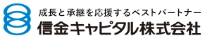 |
信金キャピタル株式会社東京都 信金キャピタル株式会社は2001年設立、信金中央金庫の100%子会社として東京都中央区に本社を置く会社です。公式サイトでは投資育成業務（創業・成… |
FA・仲介両方※金融グループ系M&A専業会社 | 36名 | 非公開 | 非公開 | 事業承継 | 2026-08-12 |
| 株式会社エス・エム・エス東京都 株式会社エス・エム・エスは2003年設立、東京都港区に本社を置く東証プライム上場企業（証券コード2175）です。介護・医療・福祉業界向けの人材紹… |
仲介のみM&A仲介・FA複合 | 35名 | 100万円 | 無料※ | 事業承継完全成功報酬 | 2026-08-12 | |
| 株式会社FFGSuccession福岡県 株式会社FFGSuccession（FFGサクセション）は、九州最大級の地域金融グループであるふくおかフィナンシャルグループ（FFG）が100%… |
FA・仲介両方金融グループ系M&A専業会社 | 35名 | 非公開 | 非公開 | 事業承継PE案件クロスボーダー | 2026-08-12 | |
| Byside株式会社東京都 Byside株式会社は2022年設立のM&Aアドバイザリーファームで、公式サイトでは「買い手探索特化型モデル」を掲げています。全国500社以上の… |
FA・仲介両方M&A仲介・FA複合 | 35名 | 2,000万円 | 無料 | 事業承継クロスボーダー着手金なし+1 | 2026-08-12 | |
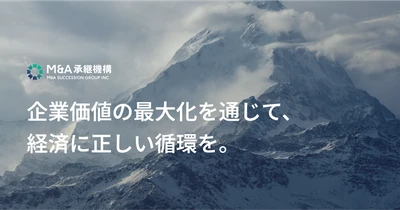 |
株式会社M&A承継機構東京都 株式会社M&A承継機構は、東京証券取引所上場のTWOSTONE&Sonsグループのグループ会社として設立されたM&Aアドバイザリー会社です。中小… |
FA・仲介両方M&A仲介・FA複合 | 34名 | 1,500万円 | 無料（譲渡側） | 事業承継PE案件クロスボーダー+1 | 2026-08-12 |
| 一般社団法人 事業承継協会埼玉支部埼玉県 一般社団法人事業承継協会埼玉支部は、東京都港区に本部を置く一般社団法人事業承継協会の埼玉県支部として、2017年に任意団体として発足し、2019… |
FA・仲介両方※事業承継支援系 | 33名 | 非公開 | 非公開 | 事業承継 | 2026-08-12 | |
| 株式会社M＆Aベストパートナーズ東京都 株式会社M＆Aベストパートナーズは、2018年8月設立の独立系M&A仲介会社です。東京・丸の内に本社を置き、札幌・仙台・金沢・名古屋・大阪・広島… |
仲介のみ独立系M&A仲介 | 30名 | 非公開 | 無料 | 事業承継PE案件着手金なし | 2026-08-12 | |
| 税理士法人 大分綜合会計事務所大分県 税理士法人大分綜合会計事務所は、大分県別府市に本社を置き、大分市内に2拠点（大分事務所・佐藤事務所）を構える税理士法人です。2003年7月の設立… |
FA・仲介両方税理士法人系 | 28名 | 60万円 | 非公開 | 事業承継 | 2026-08-12 | |
| 京都Ｍ＆Ａアドバイザリー株式会社京都府 京都Ｍ＆Ａアドバイザリー株式会社は、2025年7月に京都フィナンシャルグループのM&A支援専門会社として、京都銀行のM&A支援事業を引き継ぐ形で… |
FA・仲介両方金融グループ系M&A専業会社 | 27名 | 非公開 | 非公開 | 事業承継 | 2026-08-12 | |
| ジャパンＭ＆Ａソリューション株式会社東京都 ジャパンＭ＆Ａソリューション株式会社は、2019年11月設立、東証グロース市場に上場（証券コード9236）するM&Aアドバイザリー・仲介会社です… |
FA・仲介両方M&A仲介・FA複合 | 26名 | 売り手500万円（税別）／買い手1,000万円（税別） | 無料 | 事業承継着手金なしPMI | 2026-08-12 | |
| 株式会社スピカコンサルティング東京都 株式会社スピカコンサルティングは、東証グロース上場の株式会社GA technologiesのグループ会社として2022年8月に設立された、業界特… |
仲介のみ独立系M&A仲介 | 25名 | 2,500万円 | 0円 | PE案件完全成功報酬 | 2026-08-12 | |
| レバレジーズM&Aアドバイザリー株式会社東京都 レバレジーズM&Aアドバイザリー株式会社は、人材大手レバレジーズ株式会社が2020年4月にM&A支援専門子会社として設立した会社です。本社を渋谷… |
FA・仲介両方※M&A仲介・FA複合 | 24名 | 非公開 | 無料 | 事業承継PE案件完全成功報酬 | 2026-08-12 | |
| SBI 辻･本郷M&A株式会社東京都 SBI辻･本郷M&A株式会社は、2022年4月に設立され、SBIグループ傘下でM&A仲介・アドバイザリー事業を展開する会社です。2023年10月… |
FA・仲介両方金融グループ系M&A専業会社 | 23名 | 2,500万円 | 無料 | 事業承継完全成功報酬 | 2026-08-12 | |
| マクサス・コーポレートアドバイザリー株式会社東京都 マクサス・コーポレートアドバイザリー株式会社は2013年4月設立の独立系M&Aアドバイザリー会社で、東京・京橋に本社を置いています。公式サイトで… |
FAのみFAS・アドバイザリー | 23名 | 非公開 | 無料 | 事業承継PE案件クロスボーダー+1 | 2026-08-12 | |
| G-FAS株式会社東京都 G-FAS株式会社は、東京都中央区京橋に本社を置く独立系のM&Aアドバイザリー・ファームです。旧社名はGCA FAS株式会社で、公式サイトでは「… |
FAのみFAS・アドバイザリー | 22名 | 非公開 | 非公開 | 事業承継PE案件クロスボーダー | 2026-08-12 | |
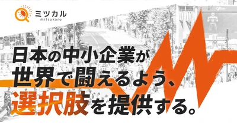 |
株式会社ミツカル東京都 株式会社ミツカルは2020年8月に東京都渋谷区恵比寿で創業した、税理士・社労士・司法書士など全国600以上（代表メッセージでは1,400とも記載… |
FA・仲介両方コンサルティング会社系 | 22名 | 2,500万円 | 非公開 | 事業承継PMI | 2026-08-12 |
| 株式会社ミライヲカタル東京都 株式会社ミライヲカタルは、2022年6月に設立された東京都港区（東京ポートシティ竹芝）に本社を置くM&A支援会社です。公式サイトでは「誰と未来を… |
FA・仲介両方M&A仲介・FA複合 | 22名 | 非公開 | 非公開 | 事業承継クロスボーダーPMI | 2026-08-12 | |
| 株式会社Ｍ＆Ａナビ東京都 株式会社Ｍ＆Ａナビは2017年設立、東京都品川区に本社を置くM&A支援会社です。公式サイトでは「M&Aナビ」を、売り手・買い手が直接やり取りでき… |
FA・仲介両方M&A仲介・FA複合 | 21名 | 500万円 | 無料※ | 事業承継完全成功報酬 | 2026-08-12 | |
| 株式会社 DYM M&Aコンサルティング東京都 株式会社DYM M&Aコンサルティングは、東京都品川区に本社を置くDYMグループの中核子会社で、2018年5月にM&A仲介・アドバイザリー事業を… |
FA・仲介両方M&A仲介・FA複合 | 21名 | 非公開 | 非公開 | 事業承継 | 2026-08-12 | |
| エムスリー株式会社東京都 エムスリー株式会社は、医療従事者向け情報サイト「m3.com」を運営する東証プライム上場企業です。同社は「m3.com開業・経営」の一事業として… |
仲介のみコンサルティング会社系 | 20名 | 500万円 | 非公開 | 事業承継 | 2026-08-12 | |
| 太陽グラントソントン・アドバイザーズ株式会社東京都 太陽グラントソントン・アドバイザーズ株式会社は、Grant Thornton International Ltd（GTIL）加盟の太陽グラントソ… |
FAのみFAS・アドバイザリー | 20名 | 非公開 | 非公開 | 事業承継PE案件クロスボーダー+1 | 2026-08-12 | |
| 株式会社倉富佐原Ｍ＆Ａ事務所東京都 株式会社倉富佐原Ｍ＆Ａ事務所は、2025年6月設立のM&A仲介会社です。公式サイトでは自らを「M&A仲介業」と位置づけており、代表の倉富佑也氏は… |
仲介のみM&A仲介・FA複合 | 19名 | 非公開 | 無料 | 事業承継PE案件クロスボーダー+1 | 2026-08-12 | |
| グローウィン・パートナーズ株式会社東京都 グローウィン・パートナーズ株式会社は、株式会社タナベコンサルティンググループを主要株主とするFAS（財務アドバイザリー）系の会社です。公式サイト… |
FA・仲介両方FAS・アドバイザリー | 19名 | 非公開 | 非公開 | 事業承継PE案件クロスボーダー+1 | 2026-08-12 | |
| ほくほくコンサルティング株式会社富山県 ほくほくコンサルティング株式会社は、株式会社ほくほくフィナンシャルグループ（北陸銀行・北海道銀行を傘下に持つ地銀グループ）が2024年5月に設立… |
FA・仲介両方※金融グループ系M&A専業会社 | 19名 | 非公開 | 非公開 | 事業承継 | 2026-08-12 | |
| 税理士法人佐藤会計事務所兵庫県 税理士法人佐藤会計事務所は兵庫県神戸市中央区に本社を置く税理士法人で、神戸事務所・小野事務所の2拠点を構えています。国のM&A支援機関登録制度に… |
FA・仲介両方税理士法人系 | 18名 | 非公開 | 非公開 | 事業承継 | 2026-08-12 | |
| 株式会社ベネフィットM&Aコンサルタンツ大阪府 株式会社ベネフィットM&Aコンサルタンツは、大阪市中央区に本社を置く株式会社キョウドウ（昭和42年創業、宅地建物取引業・貸金業登録事業者）がM&… |
FA・仲介両方※M&A仲介・FA複合 | 18名 | 非公開 | なし | 事業承継完全成功報酬 | 2026-08-12 | |
| 株式会社ユナイテッド・フロント・パートナーズ静岡県 株式会社ユナイテッド・フロント・パートナーズは、2018年4月設立のM&A仲介会社です。静岡に本社を置き、長野・岐阜・宮城・岡山・福岡・北海道の… |
仲介のみM&A仲介・FA複合 | 18名 | 非公開 | 無料 | 事業承継着手金なし | 2026-08-12 | |
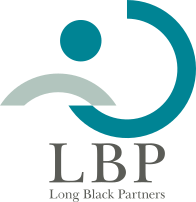 |
ロングブラックパートナーズ株式会社東京都 ロングブラックパートナーズ株式会社（LBP）は2008年設立の財務アドバイザリーグループで、東京本社のほか大阪・岡山・札幌・松江・福岡・名古屋・… |
FA・仲介両方FAS・アドバイザリー | 18名 | 非公開 | 非公開 | 事業承継PE案件クロスボーダー | 2026-08-12 |
| 一般社団法人ＡＳＥＦ東京都 一般社団法人ASEFは東京都千代田区霞が関に所在する2013年設立の一般社団法人で、国のM&A支援機関登録制度に登録された支援機関として中小企業… |
FA・仲介両方※FAS・アドバイザリー | 17名 | 非公開 | 非公開 | 2026-08-12 | ||
| 税理士法人グローバルマネジメント大阪府 税理士法人グローバルマネジメントは、大阪市北区中之島に本社を置く税理士法人です。前身の和田正宏税理士事務所（1997年開設）を経て2005年9月… |
FA・仲介両方税理士法人系 | 17名 | 200万円 | 非公開 | 事業承継 | 2026-08-12 | |
| 株式会社たすきコンサルティング東京都 株式会社たすきコンサルティングは、東京都千代田区大手町に本社を置く2005年設立のM&A仲介・アドバイザリー会社です。税理士法人クリアコンサルテ… |
FA・仲介両方FAS・アドバイザリー | 17名 | 2,000万円 | 無料 | 事業承継完全成功報酬 | 2026-08-12 | |
| 株式会社バトンズ東京都 株式会社バトンズは2018年設立のM&A・事業承継支援プラットフォーム「BATONZ」を運営する会社で、2026年4月に東京証券取引所グロース市… |
仲介のみM&Aプラットフォーム・マッチング | 17名 | 35万円 | 無料※ | 事業承継着手金なし | 2026-08-12 | |
| 株式会社北海道共創パートナーズ北海道 株式会社北海道共創パートナーズ（HKP）は、北洋銀行が100%出資する札幌市中央区の総合コンサルティング会社で、2017年9月に設立されました。… |
FA・仲介両方金融グループ系M&A専業会社 | 17名 | 非公開 | 非公開 | 事業承継PE案件 | 2026-08-12 | |
| 株式会社みらい共創アドバイザリー東京都 株式会社みらい共創アドバイザリーは、東京都千代田区大手町に本社を置くアドバイザリー会社で、2002年3月に設立されました（旧社名「みらいエフピー… |
FA・仲介両方※FAS・アドバイザリー | 17名 | 非公開 | 非公開 | 事業承継PE案件 | 2026-08-12 | |
| 株式会社リンクタイズワークス東京都 株式会社リンクタイズワークスは、東京都港区東麻布に本社を置くM&A仲介・アドバイザリー会社です。2021年10月に設立され、旧社名「株式会社M&… |
FA・仲介両方M&A仲介・FA複合 | 17名 | 2,000万円 | 無料※ | 事業承継PE案件完全成功報酬+1 | 2026-08-12 | |
| 有限会社 Ｋ・アセットマネジメント沖縄県 有限会社Ｋ・アセットマネジメントは、沖縄県中頭郡嘉手納町に本社を置く企業です。公式サイト（goopeホームページサービス上に開設）によると、不動… |
仲介のみ※その他M&A支援会社 | 16名 | 非公開 | 非公開 | 2026-08-12 | ||
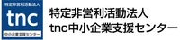 |
特定非営利活動法人tnc中小企業支援センター東京都 特定非営利活動法人tnc中小企業支援センターは、東京都西東京市に拠点を置くNPO法人で、2010年2月に設立されました。多摩北部五市（清瀬市・小… |
FA・仲介両方※事業承継支援系 | 16名 | 非公開 | 非公開 | 事業承継 | 2026-08-12 |
| 山田アンドパートナーズアドバイザリー株式会社東京都 山田アンドパートナーズアドバイザリー株式会社は、東京都千代田区丸の内に本部を置くM&Aアドバイザリー会社で、2024年1月に設立されました。税理… |
FA・仲介両方FAS・アドバイザリー | 16名 | 2,000万円 | 非公開 | 事業承継PMI | 2026-08-12 | |
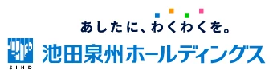 |
池田泉州M&Aソリューション株式会社大阪府 池田泉州M&Aソリューション株式会社は、2026年1月30日に設立された、株式会社池田泉州ホールディングス（池田泉州銀行を中核とする金融グループ… |
FA・仲介両方※金融グループ系M&A専業会社 | 15名 | 2,200万円 | 110万円※ | 事業承継PMI | 2026-08-12 |
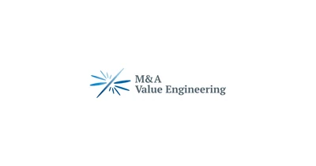 |
株式会社Ｍ＆Ａバリューエンジニアリング東京都 株式会社Ｍ＆Ａバリューエンジニアリングは、東京都中央区京橋に本社を置くM&A支援会社です。公式サイト（ma-ve.co.jp）はキャッチフレーズ… |
FA・仲介両方M&A仲介・FA複合 | 15名 | 4,000万円（FA業務）／2,500万円（仲介業務・譲渡側） | 非公開 | 2026-08-12 | |
| オリックス株式会社東京都 オリックス株式会社は、東京都港区に本社を置く総合金融サービス企業で、東証プライム市場（証券コード8591）とニューヨーク証券取引所（IX）に上場… |
仲介のみ金融グループ系M&A専業会社 | 15名 | 公式開示なし | 非公開 | 事業承継 | 2026-08-12 | |
| 静銀経営コンサルティング株式会社静岡県 静銀経営コンサルティング株式会社は、静岡市清水区に本社を置く株式会社しずおかフィナンシャルグループの子会社です。2000年4月に設立され、202… |
FA・仲介両方※金融グループ系M&A専業会社 | 15名 | 非公開 | 非公開※ | 事業承継 | 2026-08-12 | |
| ソーシング・ブラザーズ株式会社東京都 ソーシング・ブラザーズ株式会社は、東京都千代田区永田町に本社を置く「インオーガニックグロースアドバイザリー」を掲げる会社です。2019年10月に… |
FA・仲介両方※M&Aプラットフォーム・マッチング | 15名 | 非公開 | 非公開 | 2026-08-12 | ||
| 税理士法人レッドサポート埼玉県 税理士法人レッドサポートは、埼玉県さいたま市浦和区に本社を置く税理士法人です。2007年6月に設立され、さいたま市（浦和・桶川）と沖縄県宮古島市… |
FA・仲介両方※税理士法人系 | 15名 | 非公開 | 非公開 | 事業承継 | 2026-08-12 | |
| 株式会社M&Aクラウド東京都 株式会社M&Aクラウドは、2015年設立のM&A支援会社で、「テクノロジーの力でM&Aに流通革命を」をミッションに掲げています。公式サイトでは、… |
FA・仲介両方M&Aプラットフォーム・マッチング | 14名 | 2,000万円 | 非公開 | 事業承継クロスボーダー | 2026-08-12 | |
| 株式会社Ｍ＆Ａサクシード東京都 株式会社Ｍ＆Ａサクシードは、東証プライム上場のビジョナル株式会社を親会社とする「M&Aサクシード」（旧ビズリーチ・サクシード）を運営する法人限定… |
FA・仲介両方M&Aプラットフォーム・マッチング | 14名 | 1,000万円 | 無料 | 事業承継PE案件完全成功報酬 | 2026-08-12 | |
| 株式会社 M&A Properties東京都 株式会社M&A Propertiesは2009年設立（2018年に組織再編・再設立）、株式会社Naciel Holdingsを親会社とするM&A… |
FA・仲介両方M&A仲介・FA複合 | 14名 | 1,000万円 | 無料※ | クロスボーダー完全成功報酬 | 2026-08-12 | |
| 株式会社ＭＪＳ Ｍ＆Ａパートナーズ東京都 株式会社ＭＪＳ Ｍ＆Ａパートナーズは2014年設立、会計ソフト大手の株式会社ミロク情報サービス（東証プライム上場、証券コード9928）を親会社と… |
FA・仲介両方その他M&A支援会社 | 14名 | 500万円 | 5億円※ | 事業承継 | 2026-08-12 | |
| 株式会社きらぼしコンサルティング東京都 株式会社きらぼしコンサルティングは1984年設立、東京きらぼしフィナンシャルグループ（きらぼし銀行等を擁する金融グループ）傘下の経営コンサルティ… |
FA・仲介両方※コンサルティング会社系 | 14名 | 非公開 | 非公開 | 事業承継PMI | 2026-08-12 | |
| ゴエンキャピタル株式会社東京都 ゴエンキャピタル株式会社は、2022年10月設立のM&A仲介会社で、「ご縁を大切に、一生涯のサポート」をコンセプトに掲げています。公式サイトでは… |
仲介のみ独立系M&A仲介 | 14名 | 非公開 | 無料 | 事業承継PE案件完全成功報酬+1 | 2026-08-12 | |
| 株式会社CCイノベーション石川県 株式会社CCイノベーションは2021年設立、石川県金沢市に本社を置く経営コンサルティング会社です（CCIグループ所属）。経営戦略策定、ICT活用… |
FA・仲介両方※コンサルティング会社系 | 14名 | 非公開 | 非公開 | 事業承継クロスボーダー | 2026-08-12 | |
| 株式会社ＳｏＬａｂｏ東京都 株式会社SoLaboは2015年設立、融資・補助金申請・会社設立・税務顧問・CFO代行など中小企業向けの総合支援を主軸とする会社です。事業内容の… |
FA・仲介両方※その他M&A支援会社 | 14名 | 500万円 | なし | 事業承継着手金なし | 2026-08-12 | |
| 株式会社日本経営研究所東京都 株式会社日本経営研究所は2019年設立、東京都港区虎ノ門に本社を置くM&Aアドバイザリー会社です（福岡にも拠点、シンガポール・香港・マレーシア・… |
FA・仲介両方その他M&A支援会社 | 14名 | 非公開 | 非公開 | 事業承継クロスボーダー | 2026-08-12 | |
| ニュース証券株式会社東京都 ニュース証券株式会社は、2001年設立（2003年商号変更）の証券会社で、新興国株式（ベトナム、タイ、ロシア、ブラジル、ドバイ等）や外貨建て債券… |
仲介のみ※証券会社系 | 14名 | 非公開 | 非公開 | 事業承継クロスボーダー | 2026-08-12 | |
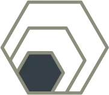 |
株式会社フラーレン東京都 株式会社フラーレンは、2024年5月創業のコンサルティングファームで、2026年4月1日に旧社名「株式会社ジャパンM&Aインキュベーション」から… |
FA・仲介両方FAS・アドバイザリー | 14名 | 2,500万円 | 非公開 | PE案件PMI | 2026-08-12 |
| 有限責任事業組合 福岡事業承継・M＆Aセンター福岡県 福岡事業承継・M＆Aセンターは、弁護士・公認会計士・税理士・中小企業診断士など複数の専門家が参加する有限責任事業組合（LLP）で、2022年7月… |
FA・仲介両方※事業承継支援系 | 13名 | 非公開 | 非公開 | 事業承継 | 2026-08-12 | |
| 株式会社あおいＦＡＳ大阪府 株式会社あおいFASは2021年設立、大阪市中央区に本社を置く経営コンサルティング・M&Aアドバイザリー会社です。大阪本社のほか東京・広島・福岡… |
FA・仲介両方FAS・アドバイザリー | 13名 | 非公開 | 非公開 | 事業承継 | 2026-08-12 | |
| 株式会社AIBJ東京都 株式会社AIBJは2006年設立、東京都港区に本社を置くM&Aアドバイザリーファームです。公式サイトでは「厳選された優良クロスボーダーM&Aに特… |
FA・仲介両方※独立系FA | 13名 | 非公開 | 非公開 | クロスボーダー | 2026-08-12 | |
| NECキャピタルソリューション株式会社東京都 NECキャピタルソリューション株式会社は1978年設立、東京証券取引所プライム市場に上場する総合リース会社です（証券コード8793）。株式会社S… |
FAのみその他M&A支援会社 | 13名 | 案件規模に応じて設定（金額非開示） | 無料※ | 事業承継PE案件クロスボーダー+1 | 2026-08-12 | |
| XMile株式会社東京都 XMile株式会社は2019年設立（同年12月に株式会社メドセラから商号変更）、東京都新宿区に本社を置く「ノンデスク産業」向けHRプラットフォー… |
仲介のみ独立系M&A仲介 | 13名 | 2,000万円 | 0円※ | 事業承継完全成功報酬 | 2026-08-12 | |
| 株式会社中小企業ファイナンシャルアドバイザリー東京都 株式会社中小企業ファイナンシャルアドバイザリーは、公認会計士・シニアプライベートバンカー・認定事業再生士・経営士が設立した、M&Aファイナンシャ… |
FAのみ独立系FA | 13名 | 1,000万円 | 非公開 | 2026-08-12 | ||
| 中野洋税理士事務所大阪府 中野洋税理士事務所は、大阪市北区紅梅町に事務所を構える税理士事務所です。税務会計顧問、事業承継、経営支援、AI活用、中堅・大企業支援、創業支援な… |
FA・仲介両方税理士法人系 | 12名 | 200万円 | 非公開 | 事業承継 | 2026-08-12 | |
| アドバンスト・ビジネス・ダイレクションズ株式会社東京都 アドバンスト・ビジネス・ダイレクションズ株式会社（ABD）は、2005年8月設立で東京都港区赤坂に本社を置くFAS・アドバイザリー会社です。公式… |
FA・仲介両方※FAS・アドバイザリー | 12名 | 非公開 | 非公開 | PMI | 2026-08-12 | |
| 税理士法人 アニモ熊本県 税理士法人アニモは、熊本県熊本市に本店（帯山事務所）を置き、2023年4月に平成事務所を開設した税理士法人です。代表社員税理士の飯田敏晴氏が20… |
FA・仲介両方※税理士法人系 | 12名 | 非公開 | 非公開 | 事業承継 | 2026-08-12 | |
| インクグロウ株式会社東京都 インクグロウ株式会社は、1990年設立で東京都中央区日本橋馬喰町に本社を置き、大阪にもオフィスを持つコンサルティング会社です。公式サイトによると… |
FA・仲介両方※コンサルティング会社系 | 12名 | 1,000万円 | なし | 事業承継着手金なしPMI | 2026-08-12 | |
| 大分ベンチャーキャピタル株式会社大分県 大分ベンチャーキャピタル株式会社は1997年10月設立、大分銀行グループに属するベンチャーキャピタルです。株主には大分銀行のほか大分リース、大分… |
FA・仲介両方金融グループ系M&A専業会社 | 12名 | 非公開 | 非公開 | PE案件 | 2026-08-12 | |
| オーナーズ株式会社東京都 オーナーズ株式会社は、東京都港区六本木に本社を置き、大阪・名古屋にも拠点を持つファイナンシャル・アドバイザリー（FA）会社です。公式サイトによる… |
FAのみ独立系FA | 12名 | 非公開 | 無料 | 事業承継着手金なし | 2026-08-12 | |
| 株式会社キョウドウ大阪府 株式会社キョウドウは、大阪市中央区南船場に本社を置く1967年設立の会社で、経営コンサルティング、M&A・事業承継仲介、不動産関連事業、ファクタ… |
FA・仲介両方※M&A仲介・FA複合 | 12名 | 2,000万円 | 無料 | 事業承継完全成功報酬 | 2026-08-12 | |
| クレジオ・パートナーズ株式会社広島県 クレジオ・パートナーズ株式会社は、2018年4月設立で広島市中区に本社を置くM&A・事業承継アドバイザリー会社です。公式サイトによると資本金5,… |
FA・仲介両方M&A仲介・FA複合 | 12名 | 1,000万円 | なし | 事業承継PE案件着手金なし | 2026-08-12 | |
| 株式会社ストリーム東京都 株式会社ストリームは、2006年7月設立で東京都中央区銀座に本社を置く会計・税務コンサルティング会社です。公式サイトによると税理士法人ストリーム… |
FA・仲介両方※FAS・アドバイザリー | 12名 | 非公開 | 非公開 | 2026-08-12 | ||
| 弁護士法人 千代田中央法律事務所東京都 弁護士法人千代田中央法律事務所は、東京都千代田区麹町に本店、埼玉県さいたま市大宮区に支店を置く総合法律事務所です。法人破産・事業再生、債務整理、… |
FAのみ法律事務所系 | 12名 | 500万円 | 無料 | 事業承継完全成功報酬 | 2026-08-12 | |
| ＴＳＵＮＡＧＵ株式会社栃木県 TSUNAGU株式会社は、栃木県宇都宮市に本社を置く「地域特化型のM&A仲介会社」です。公式サイトによると宇都宮のほか群馬・茨城・埼玉・東京・富… |
仲介のみM&A仲介・FA複合 | 12名 | 非公開 | 非公開 | 事業承継PMI | 2026-08-12 | |
| 中之島キャピタル株式会社大阪府 中之島キャピタル株式会社は、大阪市北区中之島に本社を置き、M&Aアドバイザリー・事業再生・組織再編・デューデリジェンス・ハンズオン経営支援を手が… |
FA・仲介両方FAS・アドバイザリー | 12名 | 1,000万円 | 非公開 | 事業承継 | 2026-08-12 | |
| NOBUNAGAサクセション株式会社岐阜県 NOBUNAGAサクセション株式会社は2023年7月、岐阜県を地盤とする十六フィナンシャルグループと日本M&Aセンターホールディングスの合弁によ… |
FA・仲介両方※金融グループ系M&A専業会社 | 12名 | 2,000万円 | 2億円※ | 事業承継 | 2026-08-12 | |
| 株式会社パラダイムシフト東京都 株式会社パラダイムシフトは2011年1月設立、東京都港区赤坂に本社を置く「IT領域に特化した金融×DXファーム」です。公式サイトでは年間30〜4… |
FA・仲介両方※M&A仲介・FA複合 | 12名 | 非公開 | 非公開 | 事業承継クロスボーダーPMI | 2026-08-12 | |
| 株式会社ROLEUP東京都 株式会社ROLEUPは2022年9月設立、東京都千代田区丸の内に本社を置くアドバイザリーファームです。M&Aアドバイザリーを中心に、デューデリジ… |
FA・仲介両方FAS・アドバイザリー | 12名 | 2,000万円 | 非公開 | PE案件クロスボーダーPMI | 2026-08-12 | |
| アドバンストアイ株式会社東京都 アドバンストアイ株式会社は、東京都中央区日本橋室町に本社を置く1999年設立のM&Aアドバイザリー専門会社です。公式サイトでは「利益相反の恐れが… |
FAのみ独立系FA | 11名 | 非公開 | 非公開 | 事業承継PE案件クロスボーダー | 2026-08-12 | |
| 株式会社ウィルゲート東京都 株式会社ウィルゲートは、東京都港区南青山に本社を置くWebマーケティング・SaaS事業を展開する企業で、事業の一つとしてベンチャー・IT領域に特… |
仲介のみM&Aプラットフォーム・マッチング | 11名 | 2,000万円 | 無料※ | 完全成功報酬 | 2026-08-12 | |
| 株式会社M&Aコンサルティング東京都 株式会社M&Aコンサルティングは、東京都港区虎ノ門に本社を置くM&A仲介会社です。公式サイトでは自社を「M&A仲介サービス」と位置づけ、公認会計… |
仲介のみ独立系M&A仲介 | 11名 | 非公開 | 無料 | 事業承継PE案件クロスボーダー+1 | 2026-08-12 | |
| 九州M&Aアドバイザーズ株式会社福岡県 九州M&Aアドバイザーズ株式会社は、2024年4月に株式会社肥後銀行・株式会社日本M&AセンターHD・台湾の玉山ベンチャーキャピタルの合弁により… |
FA・仲介両方金融グループ系M&A専業会社 | 11名 | 2,000万円 | 100万円※ | 事業承継クロスボーダーPMI | 2026-08-12 | |
| 株式会社グラックス・アンド・アソシエイツ東京都 株式会社グラックス・アンド・アソシエイツは、東京都新宿区下宮比町に本社を置き、大阪にも事務所を持つ金融・不動産コンサルティング会社です。2000… |
FAのみFAS・アドバイザリー | 11名 | 非公開 | 非公開 | 2026-08-12 | ||
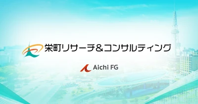 |
株式会社栄町リサーチ＆コンサルティング愛知県 株式会社栄町リサーチ＆コンサルティングは、東証プライムおよび名証プレミアに上場する株式会社あいちフィナンシャルグループ（証券コード7389）の完… |
FA・仲介両方※その他M&A支援会社 | 11名 | 非公開 | 非公開 | 事業承継 | 2026-08-12 |
| 株式会社サクシード栃木県 株式会社サクシードは、栃木県宇都宮市に本社を置き、東京・さいたまにも拠点を持つ経営コンサルティング会社です。2010年に地域企業向けの経営支援サ… |
FAのみコンサルティング会社系 | 11名 | 非公開 | 非公開 | 事業承継 | 2026-08-12 | |
| 総合メディカルグループ株式会社福岡県 総合メディカルグループ株式会社は、調剤薬局・院内売店・リネンサプライなど医業経営支援を幅広く展開する福岡発の医療関連企業グループです。会社概要ペ… |
仲介のみコンサルティング会社系 | 11名 | 非公開 | 無料 | 事業承継完全成功報酬 | 2026-08-12 | |
| 株式会社ユニヴィスコンサルティング東京都 株式会社ユニヴィスコンサルティングは、東京都港区虎ノ門に本社を置くユニヴィスグループのM&A専門会社です。同グループは公認会計士・税理士等が中心… |
FA・仲介両方FAS・アドバイザリー | 11名 | 設定なし | 無料※ | 事業承継PE案件完全成功報酬+1 | 2026-08-12 | |
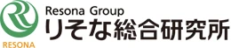 |
りそな総合研究所株式会社大阪府 りそな総合研究所株式会社は、株式会社りそなホールディングスが100%出資する金融グループ系のコンサルティング会社です。1986年の設立以来、大阪… |
FA・仲介両方※金融グループ系M&A専業会社 | 11名 | 非公開 | 非公開 | 事業承継 | 2026-08-12 |
| 法律事務所ネクシード東京都 法律事務所ネクシードは2018年2月に開設された東京都港区赤坂の法律事務所で、ベンチャー企業法務・一般企業法務・M&A・暗号資産関連法務・破産事… |
FA・仲介両方※法律事務所系 | 10名 | 非公開 | 非公開 | 2026-08-12 | ||
| イデア総研コンサルティング 株式会社大分県 イデア総研コンサルティング株式会社は、大分市に本拠を置くイデア総研グループの一員です。グループ中核のイデア総研税理士法人は1998年創業（法人設… |
仲介のみ税理士法人系 | 10名 | 非公開 | 非公開 | 事業承継 | 2026-08-12 | |
| いわぎんリサーチ＆コンサルティング株式会社岩手県 いわぎんリサーチ＆コンサルティング株式会社は、岩手県盛岡市に本社を置く株式会社岩手銀行の100%子会社で、2020年4月に設立されました。公式サ… |
FA・仲介両方金融グループ系M&A専業会社 | 10名 | 300万円 | 50万円※ | 事業承継PE案件 | 2026-08-12 | |
| エムレイス株式会社東京都 エムレイス株式会社は2014年1月設立、東京都中央区京橋に本社を置くM&A仲介会社で、レイスグループ（1997年設立）に属しています。会社概要ペ… |
FA・仲介両方コンサルティング会社系 | 10名 | 1,500万円 | 無料 | 事業承継着手金なしPMI | 2026-08-12 | |
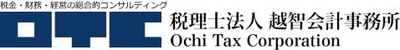 |
税理士法人越智会計事務所愛媛県 税理士法人越智会計事務所は1948年創業（法人設立2011年10月）、愛媛県松山市に本社を置く税理士法人です。松山・今治・東京の3拠点で税理士業… |
FA・仲介両方※税理士法人系 | 10名 | 非公開 | 非公開 | 事業承継 | 2026-08-12 |
| オリオン税理士法人東京都 オリオン税理士法人は2010年6月設立、東京都豊島区に本社を置く税理士法人です。公式サイトでは「事業承継・相続専門の税理士法人」を掲げ、遺産分割… |
FA・仲介両方税理士法人系 | 10名 | 165万円 | 非公開 | 事業承継 | 2026-08-12 | |
| シェアモル株式会社東京都 シェアモル株式会社は2019年9月設立、東京都中央区日本橋兜町に本社を置くM&A仲介会社で、「シェアモルM&A」を運営しています。公式サイトでは… |
仲介のみ独立系M&A仲介 | 10名 | 非公開 | 無料 | 事業承継完全成功報酬 | 2026-08-12 | |
| 株式会社ジーケーパートナーズ大阪府 株式会社ジーケーパートナーズは、大阪市中央区に本社を置き、東京・金沢に支社を持つ企業再生・事業承継支援会社です。公式サイトでは、企業再生コンサル… |
仲介のみFAS・アドバイザリー | 10名 | 非公開 | 非公開 | 事業承継PE案件 | 2026-08-12 | |
| 株式会社トランビ東京都 株式会社トランビは2016年4月設立、事業承継・M&Aマッチングプラットフォーム「TRANBI」を運営する会社です。運営会社情報ページでは会員数… |
FA・仲介両方M&Aプラットフォーム・マッチング | 10名 | 非公開 | 無料 | 事業承継着手金なし | 2026-08-12 | |
| 株式会社日税ビジネスサービス東京都 株式会社日税ビジネスサービスは、1974年設立、東京都新宿区に本社を置く日税グループの企業です。税理士向けの会費・報酬集金代行や情報提供サービス… |
FAのみコンサルティング会社系 | 10名 | 非公開 | 非公開 | 事業承継 | 2026-08-12 | |
| 日本テクノ株式会社東京都 日本テクノ株式会社は、東京都新宿区に本社を置く1995年設立の企業で、公式サイトでは電力コンサルティングや高圧電気設備保安管理、発電・小売電気事… |
仲介のみその他M&A支援会社 | 10名 | 300万円 | 20万円※ | 事業承継 | 2026-08-12 | |
| 税理士法人布川税務会計事務所茨城県 税理士法人布川税務会計事務所は1972年創業（法人化2018年12月）、茨城県つくば市に本社を置く税理士法人です。同一グループの弁護士法人布川法… |
FAのみ※税理士法人系 | 10名 | 非公開 | 非公開 | 2026-08-12 | ||
| バンクオブストラテジー株式会社東京都 バンクオブストラテジー株式会社は、東京都千代田区に所在するM&Aアドバイザリー会社です。公式サイトでは「のれん（企業ブランド価値）をつなぐ」こと… |
FA・仲介両方M&A仲介・FA複合 | 10名 | 非公開 | 無料 | 事業承継完全成功報酬 | 2026-08-12 | |
| 株式会社 BAMC associates東京都 株式会社BAMC associatesは、東京都中央区銀座に本社を置く2004年設立のコンサルティングファームで、会計顧問業務を軸に経営コンサル… |
FAのみ会計士法人系 | 10名 | 非公開 | 非公開 | 事業承継クロスボーダー | 2026-08-12 | |
| 株式会社ファイナンス・プロデュース東京都 株式会社ファイナンス・プロデュースは2021年5月設立、東京都港区に本社を置く独立系FAです。公式サイトでは「社会を変える事業を創るためのファイ… |
FAのみ独立系FA | 10名 | 非公開 | 非公開 | PE案件 | 2026-08-12 | |
| 株式会社ブラザシップコンサルティング愛知県 株式会社ブラザシップコンサルティングは、愛知県小牧市に本社を置き、名古屋・東京にもオフィスを持つ会社です。同一所在地に税理士法人ブラザシップがあ… |
仲介のみコンサルティング会社系 | 10名 | 非公開 | 無料 | 事業承継完全成功報酬PMI | 2026-08-12 | |
| プライマリーアドバイザリー株式会社東京都 プライマリーアドバイザリー株式会社は東京都港区南青山に本社を置く独立系のM&Aアドバイザリー会社で、「M&Aの仲介及びアドバイザリー業務」を事業… |
FA・仲介両方※独立系FA | 10名 | 非公開 | 無料 | 完全成功報酬PMI | 2026-08-12 | |
| 株式会社メディヴァ東京都 株式会社メディヴァは、東京都世田谷区に本社を置く医療・介護分野の経営コンサルティング会社です。2000年設立で、東急不動産株式会社が主要株主の一… |
FA・仲介両方コンサルティング会社系 | 10名 | 500万円 | 無料 | 事業承継PE案件完全成功報酬 | 2026-08-12 | |
| 株式会社ライトライト宮崎県 株式会社ライトライトは2020年1月設立、宮崎県宮崎市に本社を置く企業で、東京都港区にも拠点を持ちます。公式サイトでは「地域に光をあてる」をミッ… |
仲介のみM&Aプラットフォーム・マッチング | 10名 | 35万円 | 無料 | 事業承継完全成功報酬 | 2026-08-12 | |
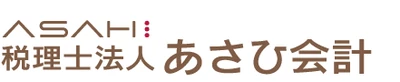 |
税理士法人あさひ会計山形県 税理士法人あさひ会計は、山形県山形市に本社を置き、山形・仙台に拠点を展開する税理士法人系のM&A支援機関です。公式サイトでは自らを「東北最大級の… |
FA・仲介両方税理士法人系 | 9名 | 非公開 | 非公開 | 事業承継 | 2026-08-12 |
| 株式会社安藤会計宮崎県 株式会社安藤会計は昭和26年（1951年）設立、宮崎県日向市に本社を置く会計事務所（安藤会計事務所）です。公式サイトでは、県北で60年以上にわた… |
仲介のみ税理士法人系 | 9名 | 非公開 | 非公開 | 事業承継 | 2026-08-12 | |
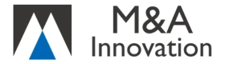 |
Ｍ＆Ａイノベーション株式会社東京都 Ｍ＆Ａイノベーション株式会社は、東京都中央区日本橋に本社、大阪市中央区に支社を置く独立系のM&A仲介・FA複合会社です。白潟総合研究所株式会社の… |
FA・仲介両方M&A仲介・FA複合 | 9名 | 500万円 | 無料 | 事業承継完全成功報酬PMI | 2026-08-12 |
| 株式会社M&Aフォース東京都 株式会社M&Aフォースは、2022年6月に設立された東京都中央区日本橋に本社を置く独立系のM&A仲介・FA複合会社です。公式サイトの会社概要では… |
FA・仲介両方M&A仲介・FA複合 | 9名 | 非公開 | 無料 | 事業承継完全成功報酬PMI | 2026-08-12 | |
| 株式会社関西合同会計事務所大阪府 株式会社関西合同会計事務所は、大阪府吹田市江坂に本社を置く税理士法人系の総合経営コンサルティング会社です。公式サイトでは「会計事務所は、経営者の… |
FA・仲介両方税理士法人系 | 9名 | 非公開 | 非公開 | 事業承継 | 2026-08-12 | |
| Ｔｉｍｅ Ｃａｐｉｔａｌ株式会社東京都 Time Capital株式会社は、東京都千代田区に本社を置くM&Aアドバイザリー会社です。代表取締役は黒田生真氏で、公式サイトでは「企業価値1… |
FA・仲介両方M&A仲介・FA複合 | 9名 | 非公開 | 非公開 | 事業承継クロスボーダーPMI | 2026-08-12 | |
| 株式会社タナベコンサルティング大阪府 株式会社タナベコンサルティングは、1957年創業の経営コンサルティング会社で、東京証券取引所プライム市場に上場するタナベコンサルティンググループ… |
FA・仲介両方コンサルティング会社系 | 9名 | 非公開 | 非公開 | 事業承継クロスボーダーPMI | 2026-08-12 | |
| 株式会社Ｎｕｍｂｅｒ Ｃｏｎｓｕｌｔｉｎｇ東京都 株式会社Number Consultingは、クリニック（医院）の事業承継・M&A支援に特化した会社で、福岡本社のほか東京・大阪・名古屋に拠点を… |
仲介のみ事業承継支援系 | 9名 | 個別見積 | 無料 | 事業承継完全成功報酬PMI | 2026-08-12 | |
| ハウスバード株式会社東京都 ハウスバード株式会社は2016年設立、東京都新宿区に本社を置く企業で、東証スタンダード上場のアグレ都市デザイン株式会社のグループ会社です。公式サ… |
FA・仲介両方※その他M&A支援会社 | 9名 | 非公開 | 非公開 | 2026-08-12 | ||
| 弁護士法人ピクト法律事務所東京都 弁護士法人ピクト法律事務所は、東京・渋谷を拠点とする2015年設立の法律事務所で、公式サイトでは「法務と税務が交わる領域を中心に」企業・経営者向… |
FA・仲介両方※法律事務所系 | 9名 | 非公開 | 非公開 | 事業承継 | 2026-08-12 | |
| 株式会社フォーバル東京都 株式会社フォーバルは1980年設立、東京証券取引所スタンダード市場（証券コード8275）に上場する情報通信・経営コンサルティング会社で、事業承継… |
仲介のみコンサルティング会社系 | 9名 | 非公開（社内で下限額を設定していると記載、具体的金額は非開示） | 無料 | 事業承継完全成功報酬PMI | 2026-08-12 | |
| MAVIS PARTNERS株式会社東京都 MAVIS PARTNERS株式会社は2019年7月設立、東京都港区に本社を置くM&A戦略コンサルティング会社です。公式サイトでは、代表の田中大… |
FAのみFAS・アドバイザリー | 9名 | 非公開 | 非公開 | クロスボーダーPMI | 2026-08-12 | |
| 株式会社メディウェル北海道 株式会社メディウェルは1996年2月設立、北海道札幌市に本社（本部は東京都渋谷区）を置く医療機関特化型の経営コンサルティング会社です。公式サイト… |
FA・仲介両方※事業承継支援系 | 9名 | 非公開 | 無料 | 事業承継完全成功報酬 | 2026-08-12 | |
| 合同会社revive東京都 合同会社reviveは、2015年（平成27年）設立、東京都中央区に本社を置く独立系のM&Aアドバイザリー会社です。資本金は950万円で、代表者… |
FAのみ独立系FA | 9名 | 非公開 | 非公開 | 事業承継 | 2026-08-12 | |
| 税理士法人 札幌中央会計北海道 税理士法人 札幌中央会計は、平成15年（2003年）7月設立、北海道札幌市中央区に本社を置く税理士法人です。公認会計士・税理士である水野克也氏が… |
FA・仲介両方※税理士法人系 | 8名 | 非公開 | 非公開 | 事業承継 | 2026-08-12 | |
| 税理士法人エクラコンサルティング東京都 税理士法人エクラコンサルティングは2011年7月設立、東京都千代田区紀尾井町に事務所を置く税理士法人です。主要業務として相続・事業承継コンサルテ… |
FA・仲介両方※税理士法人系 | 8名 | 非公開 | 非公開 | 事業承継 | 2026-08-12 | |
| 株式会社創徳企業情報東京都 株式会社創徳企業情報は1999年7月設立、東京都中央区日本橋に本社を置くM&Aアドバイザリー会社です。公式サイトでは企業の合併・買収（M&A）お… |
FAのみその他M&A支援会社 | 8名 | 非公開 | 非公開 | 2026-08-12 | ||
| あおもり創生パートナーズ株式会社青森県 あおもり創生パートナーズ株式会社は2019年10月設立、青森県青森市に本社を置く企業です。母体は1978年設立の一般財団法人青森地域社会研究所に… |
FA・仲介両方※金融グループ系M&A専業会社 | 8名 | 非公開 | 非公開 | 事業承継 | 2026-08-12 | |
| 株式会社アレスインベスターパートナーズ神奈川県 株式会社アレスインベスターパートナーズは、神奈川県横浜市に本社を置く、医療・介護・調剤薬局分野に特化したM&A事業承継仲介会社です。中小企業庁の… |
仲介のみ事業承継支援系 | 8名 | 85万円 | 無料 | 事業承継完全成功報酬 | 2026-08-12 | |
| 税理士法人 ウィズラン長崎県 税理士法人ウィズランは、長崎県佐世保市に本社を置く税理士法人で、2007年1月の創業を経て2015年7月に税理士法人として設立されました。佐世保… |
FAのみ税理士法人系 | 8名 | 200万円 | 非公開 | 事業承継 | 2026-08-12 | |
| HLサクセション株式会社東京都 HLサクセション株式会社は、東京都港区の麻布台ヒルズに本社を置き、2019年6月に設立されたM&Aアドバイザリー会社です。株主はグローバル投資銀… |
FAのみ金融グループ系M&A専業会社 | 8名 | 非公開 | 無料 | 事業承継PE案件着手金なし | 2026-08-12 | |
| ＸＩＢ株式会社東京都 ＸＩＢ株式会社は、2016年設立で東京都千代田区丸の内に本社を置く独立系M&Aアドバイザリー会社です。公式サイトでは「グローバル投資銀行レベルの… |
FAのみ独立系FA | 8名 | 非公開 | 非公開 | PE案件クロスボーダー | 2026-08-12 | |
| 株式会社エムステージマネジメントソリューションズ東京都 株式会社エムステージマネジメントソリューションズは、2019年10月設立、東京都品川区に本社を置く医療人材大手エムステージグループ傘下の会社です… |
FA・仲介両方事業承継支援系 | 8名 | 非公開 | 無料 | 事業承継着手金なし | 2026-08-12 | |
| 株式会社会計事務所リライト東京都 株式会社会計事務所リライトは、東京都千代田区神田三崎町（水道橋）を本部とする税理士法人グループです。池袋・恵比寿・横浜・福島（いわき）・湘南（藤… |
FA・仲介両方税理士法人系 | 8名 | 300万円 | 非公開 | 事業承継 | 2026-08-12 | |
| Kingsman capital partners株式会社東京都 Kingsman capital partners株式会社は、2018年6月設立のM&A仲介会社です。公式サイトによれば、代表取締役の駒井友彦氏… |
仲介のみ独立系M&A仲介 | 8名 | 非公開 | 無料※ | 事業承継完全成功報酬 | 2026-08-12 | |
| 株式会社サーキュレーション東京都 株式会社サーキュレーションは、東京都渋谷区に本社を置く2014年1月設立の企業です。公式サイトでは、外部の高度専門人材（プロ人材）を企業に紹介・… |
FA・仲介両方※コンサルティング会社系 | 8名 | 非公開 | 非公開 | 事業承継 | 2026-08-12 | |
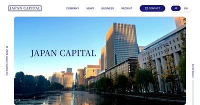 |
ジャパンキャピタル株式会社東京都 ジャパンキャピタル株式会社は、東京都千代田区丸の内に本社を置くM&A仲介会社です。2024年11月に設立され、資本金は100万円、事業内容はM&… |
FA・仲介両方独立系M&A仲介 | 8名 | 非公開 | 無料 | PE案件着手金なし | 2026-08-12 |
| 株式会社GMコンサルタンツ大阪府 株式会社GMコンサルタンツは、大阪市北区中之島に所在する法人で、公式サイトの「GMについて」ページによれば平成24年5月（2012年5月）に設立… |
FA・仲介両方※コンサルティング会社系 | 8名 | 非公開 | 非公開 | 2026-08-12 | ||
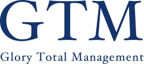 |
株式会社GTM総研東京都 株式会社GTM総研は1977年10月設立、東京都中央区八重洲に本社を置く会計・税務系のコンサルティング会社です。公式サイトでは「会計・税務の総合… |
FAのみ※会計士法人系 | 8名 | 非公開 | 非公開 | 事業承継 | 2026-08-12 |
| 合同会社総合コンサル大阪府 合同会社総合コンサルは、大阪市に拠点を置く独立系のM&A仲介・コンサルティング会社です。公式サイトでは、M&A仲介業に加えて補助金・資金調達支援… |
仲介のみコンサルティング会社系 | 8名 | 非公開 | 無料 | 完全成功報酬 | 2026-08-12 | |
| 株式会社ＴＢＣ東京都 株式会社ＴＢＣは、2015年10月設立、東京都千代田区飯田橋に本社を置くM&Aアドバイザリー会社です。公認会計士である大山修氏が代表取締役を務め… |
FAのみ独立系FA | 8名 | 550万円 | 無料 | 事業承継完全成功報酬 | 2026-08-12 | |
| デ | ディレクション・プライベート・エクイティ株式会社東京都 ディレクション・プライベート・エクイティ株式会社は2019年設立、東京都港区虎ノ門に本社を置くM&A・投資会社です。公式サイトでは事業を「コンサ… |
FA・仲介両方FAS・アドバイザリー | 8名 | 非公開 | 非公開 | 事業承継PE案件 | 2026-08-12 |
| 東海東京証券株式会社愛知県 東海東京証券株式会社は、東海東京フィナンシャル・ホールディングス株式会社の100%子会社である証券会社です。公式サイトでは、中小企業庁の「中小M… |
FA・仲介両方証券会社系 | 8名 | 非公開 | 非公開 | 2026-08-12 | ||
| 東急リバブル株式会社東京都 東急リバブル株式会社は1972年設立、東京都渋谷区に本社を置く不動産流通大手で、東急不動産ホールディングス株式会社の子会社です。ソリューション事… |
FA・仲介両方※その他M&A支援会社 | 8名 | 非公開 | 非公開 | 事業承継 | 2026-08-12 | |
| 株式会社日税経営情報センター東京都 株式会社日税経営情報センターは、日税グループに属し、税理士とその関与先企業を主な対象にM&A・事業承継の支援を行う会社です。公式サイトでは「税理… |
FA・仲介両方その他M&A支援会社 | 8名 | 非公開 | 非公開 | 事業承継 | 2026-08-12 | |
| 一般財団法人日本的M＆A推進財団福岡県 一般財団法人日本的M＆A推進財団は、福岡市に所在する2014年設立の一般財団法人です。公式サイトでは「後継者未定問題を解決する士業団体」として、… |
FA・仲介両方※M&Aプラットフォーム・マッチング | 8名 | 非公開 | 非公開 | 事業承継 | 2026-08-12 | |
| 株式会社ビズハブ東京都 株式会社ビズハブは、東京都港区芝浦に本社を置く2021年2月設立のM&A支援会社で、長野県松本市にも「ビズハブ信州」の拠点を持ちます。公式サイト… |
FA・仲介両方※その他M&A支援会社 | 8名 | 案件により異なる（利用サービスの違いや外部専門家〔弁護士・税理士等〕への委託有無による、公式サイトより） | 非公開 | 事業承継 | 2026-08-12 | |
| ＭＡＣアドバイザリー株式会社東京都 ＭＡＣアドバイザリー株式会社は、東京都千代田区丸の内に本社を置くM&A仲介会社です。公式サイトでは自社を「薬局専門事業承継のリーディングカンパニ… |
仲介のみ事業承継支援系 | 8名 | 非公開（下限報酬は設定せず、案件ごとに相談） | 無料 | 事業承継完全成功報酬 | 2026-08-12 | |
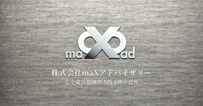 |
株式会社ｍａＸアドバイザリー東京都 株式会社ｍａＸアドバイザリーは、東京都港区に本社を置くM&A仲介会社です。事業内容はM&A仲介事業で、資本金は1,000万円、髙橋諒大氏・稲見玲… |
仲介のみ独立系M&A仲介 | 8名 | 非公開 | 無料 | クロスボーダー完全成功報酬 | 2026-08-12 |
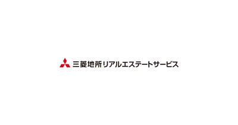 |
三菱地所リアルエステートサービス株式会社東京都 三菱地所リアルエステートサービス株式会社は、三菱地所グループの不動産総合サービス会社で、事業用不動産の仲介・鑑定・CRE戦略支援等を主力事業とし… |
FA・仲介両方その他M&A支援会社 | 8名 | 非公開 | 非公開 | 事業承継 | 2026-08-12 |
| 税理士法人行本事務所山口県 税理士法人行本事務所（株式会社行本会計事務所）は、昭和57年（1982年）創業、山口県山口市に本社、広島県広島市に支店を置く会計事務所です。公式… |
FA・仲介両方※税理士法人系 | 8名 | 非公開 | 非公開 | 事業承継 | 2026-08-12 | |
| 株式会社ユニヴMP大阪府 株式会社ユニヴMPは2024年10月設立、大阪府大阪市を本社所在地とする調剤薬局専門のM&A支援会社です。公式サイト「ファーネットビズ」を運営し… |
仲介のみその他M&A支援会社 | 8名 | 非公開 | 無料 | 事業承継完全成功報酬 | 2026-08-12 | |
| 株式会社リガーレ大阪府 株式会社リガーレは、2022年設立の大阪市に本社を置くM&Aアドバイザリー会社です。公式サイトでは、代表取締役CEOをはじめとする経営陣に税理士… |
FA・仲介両方税理士法人系 | 8名 | 2,000万円 | 無料 | 事業承継完全成功報酬 | 2026-08-12 | |
| 税理士法人渡邊リーゼンバーグ東京都 税理士法人渡邊リーゼンバーグは、東京都港区東新橋に本社、大田区大森に支社を置く税理士法人です。公式サイトによれば社員70名（関連企業含む）で、税… |
FA・仲介両方※税理士法人系 | 8名 | 非公開 | 非公開 | 事業承継 | 2026-08-12 | |
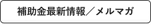 |
株式会社東京経営サポーター東京都 株式会社東京経営サポーターは、東京都多摩市に本社を置く中小企業診断士事務所です。2012年に創業し、2013年9月に設立、資本金は3,000万円… |
FA・仲介両方独立系M&A仲介 | 8名 | 200万円 | 無料※ | 事業承継着手金なしPMI | 2026-08-12 |
| 笠間税務会計事務所東京都 笠間税務会計事務所は、東京都港区赤坂に拠点を置く税理士系の会計事務所です。代表の笠間浩明氏は早稲田大学法学部を卒業後、中央クーパース・アンド・ラ… |
FA・仲介両方税理士法人系 | 8名 | 100万円 | 非公開 | 2026-08-12 | ||
| セレンディップ・フィナンシャルサービス株式会社愛知県 セレンディップ・フィナンシャルサービス株式会社は、愛知県名古屋市中区に本社を置くM&A・投資関連会社です。東証プライム上場のセレンディップ・ホー… |
FA・仲介両方金融グループ系M&A専業会社 | 7名 | 非公開 | 非公開 | 事業承継PE案件クロスボーダー+1 | 2026-08-12 | |
| TS&Co.グループホールディングス株式会社東京都 TS&Co.グループホールディングス株式会社は、東京都新宿区に本社を置く経営変革コンサルティング会社です。公式サイトでは事業内容を「経営変革業」… |
FAのみ※その他M&A支援会社 | 7名 | 非公開 | 非公開 | PMI | 2026-08-12 | |
| Ｃ－ＦＩＸ税理士法人京都府 Ｃ－ＦＩＸ税理士法人は、2004年（平成16年）設立の税理士法人で、京都市下京区の四条烏丸事務所と京都市南区の京都駅前事務所の2拠点体制で会計・… |
FAのみ※税理士法人系 | 7名 | 非公開 | 非公開 | 2026-08-12 | ||
| 株式会社ASEFパートナーズ東京都 株式会社ASEFパートナーズは、東京都千代田区霞が関に本社を置く2012年設立のコンサルティング会社です。公式サイトでは「経理・財務・会計の生産… |
FA・仲介両方※FAS・アドバイザリー | 7名 | 非公開 | 非公開 | PMI | 2026-08-12 | |
| 株式会社アルタ愛知県 株式会社アルタは、愛知県名古屋市に本社を置くICT・Web総合商社です。2005年設立、資本金1,500万円、従業員約50名（グループ会社含む）… |
FA・仲介両方事業承継支援系 | 7名 | 非公開 | 非公開 | 事業承継 | 2026-08-12 | |
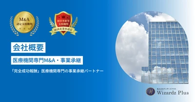 |
株式会社ウィザーズプラス東京都 株式会社ウィザーズプラスは、2009年8月設立のコンサルティング会社で、医療・福祉業界に特化したM&A・事業承継支援サイト「ウィザーズプラス（m… |
FA・仲介両方事業承継支援系 | 7名 | 非公開 | 無料※ | 事業承継完全成功報酬PMI | 2026-08-12 |
| 株式会社ウィット東京都 株式会社ウィットは、東京都渋谷区に本社を置く飲食業界専門のM&A仲介会社です。2007年11月の設立以来、飲食店・飲食企業のM&Aに特化してサー… |
FA・仲介両方※その他M&A支援会社 | 7名 | 350万円 | 無料 | 事業承継完全成功報酬 | 2026-08-12 | |
| 株式会社エコ・ブレーンズ静岡県 株式会社エコ・ブレーンズは、静岡県静岡市に本社を置く経営コンサルティング会社です。2008年11月に個人事業「RS経営コンサルティング」として創… |
FA・仲介両方※その他M&A支援会社 | 7名 | 200万円 | なし | 事業承継完全成功報酬 | 2026-08-12 | |
| 株式会社SNET関西ビジネスコンサルティング大阪府 株式会社SNET関西ビジネスコンサルティングは、2021年3月設立、大阪市北区を拠点とする独立系のM&Aコンサルティング会社です。公式サイトでは… |
仲介のみコンサルティング会社系 | 7名 | 非公開 | 無料 | 事業承継着手金なし | 2026-08-12 | |
| 株式会社OAGコンサルティング東京都 株式会社OAGコンサルティングは、東京都千代田区に本社を置く2000年6月設立のコンサルティング会社です。OAG税理士法人を中核とする「OAGコ… |
FA・仲介両方コンサルティング会社系 | 7名 | 1,000万円 | 100万円※ | 事業承継クロスボーダー | 2026-08-12 | |
| かえでファイナンシャルアドバイザリー株式会社東京都 かえでファイナンシャルアドバイザリー株式会社は、2005年設立の東京・丸の内を拠点とするM&Aアドバイザリー会社です。公式サイトでは、かえで監査… |
FA・仲介両方FAS・アドバイザリー | 7名 | 500万円 | 無料 | 事業承継PE案件完全成功報酬 | 2026-08-12 | |
| 株式会社共創支援パートナーズ東京都 株式会社共創支援パートナーズは、東京都中央区に本社を置くM&A仲介会社です。公式サイトでは「共に創るM&A仲介」を掲げ、単なる取引の仲介にとどま… |
FA・仲介両方※FAS・アドバイザリー | 7名 | 2,500万円 | 無料 | 完全成功報酬 | 2026-08-12 | |
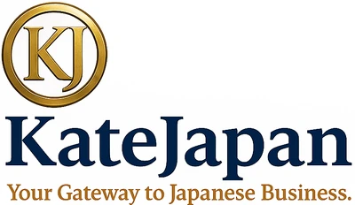 |
合同会社Ｋａｔｅ Ｊａｐａｎ大阪府 合同会社Kate Japanは、2018年創業・大阪市中央区を拠点とするM&A仲介会社です。公式サイトでは国内・海外のM&A案件・投資案件を扱う… |
仲介のみその他M&A支援会社 | 7名 | 非公開 | 無料 | 事業承継クロスボーダー着手金なし | 2026-08-12 |
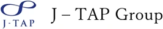 |
株式会社J-TAPアドバイザリー東京都 株式会社J-TAPアドバイザリーは、2013年創業（旧社名：株式会社日本再生パートナーズ、2016年に現社名へ変更）の東京・内神田に本社を置くコ… |
FA・仲介両方FAS・アドバイザリー | 7名 | 非公開 | 非公開 | 事業承継 | 2026-08-12 |
| 株式会社ジャパンインベストメントアドバイザー東京都 株式会社ジャパンインベストメントアドバイザーは、2006年設立で東京証券取引所プライム市場に上場する金融グループ（証券コード7172、親会社は株… |
FA・仲介両方その他M&A支援会社 | 7名 | 非公開 | 非公開 | 事業承継PE案件 | 2026-08-12 | |
| 株式会社TYL東京都 株式会社TYLは、2017年8月設立で東京都港区芝に本社を置く企業で、動物病院向けの人材紹介・経営コンサルティングを主力事業としています。同社は… |
仲介のみ事業承継支援系 | 7名 | 非公開 | 無料 | 事業承継完全成功報酬 | 2026-08-12 | |
| ドーン・クロス株式会社東京都 ドーン・クロス株式会社（DawnX）は、2023年7月設立・東京都文京区を拠点とするM&A支援会社です。公式サイトでは「IT領域で事業展開を行な… |
FAのみその他M&A支援会社 | 7名 | 非公開 | 非公開 | 事業承継PE案件 | 2026-08-12 | |
| ビジョンクラフト株式会社東京都 ビジョンクラフト株式会社は、2022年設立の東京・麹町を拠点とするM&A支援会社です。公式サイトでは「譲受事業」と「事業承継戦略事業」の2本柱を… |
FA・仲介両方その他M&A支援会社 | 7名 | 非公開 | 無料 | 事業承継完全成功報酬PMI | 2026-08-12 | |
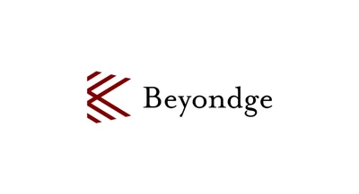 |
Beyondge株式会社東京都 Beyondge株式会社は、東京都渋谷区に本社を置く2022年5月設立の会社です。公式サイトでは、ビジネス・採用・投資・M&A・テクノロジーの5… |
FA・仲介両方※コンサルティング会社系 | 7名 | 非公開 | 非公開 | PMI | 2026-08-12 |
| ピナクル株式会社東京都 ピナクル株式会社は、2004年設立の東京・芝公園に本社を置くM&Aアドバイザリー会社です。公式サイトでは、リーマン・ブラザースやGE、日本長期信… |
FAのみ独立系FA | 7名 | 非公開 | 非公開 | 事業承継クロスボーダー | 2026-08-12 | |
| 株式会社フォーナレッジ愛知県 株式会社フォーナレッジは、愛知県名古屋市東区に本社を置くM&A仲介会社です。2011年創業、2013年設立で、名古屋のほか東京・大阪・神戸・蒲郡… |
FA・仲介両方※その他M&A支援会社 | 7名 | 150万円 | 10万円※ | 事業承継 | 2026-08-12 | |
| 誠国際FAS株式会社東京都 誠国際FAS株式会社は、東京都中央区日本橋人形町に所在し、「誠国際監査法人」「誠国際税理士法人」とともに三法人体制で運営される会計・監査・コンサ… |
FA・仲介両方FAS・アドバイザリー | 7名 | 非公開 | 非公開 | クロスボーダー | 2026-08-12 | |
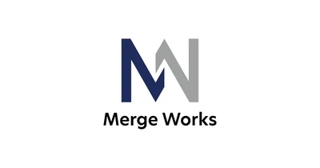 |
株式会社Merge Works東京都 株式会社Merge Worksは、東京都中央区銀座に本社を置くM&A支援会社です。株式会社PENSEURのプレスリリースによれば、2023年5月… |
FAのみ※その他M&A支援会社 | 7名 | 非公開 | 非公開 | PMI | 2026-08-12 |
| 山田アンドパートナーズコンサルティング株式会社東京都 山田アンドパートナーズコンサルティング株式会社は、東京都千代田区丸の内に本社を置くM&Aアドバイザリー会社です。登記上の法人番号（1010001… |
FA・仲介両方FAS・アドバイザリー | 7名 | 非公開 | 非公開 | 事業承継PMI | 2026-08-12 | |
| 株式会社ユニヴ大阪府 株式会社ユニヴは大阪市に本社を置き、東京・福岡に拠点を持つ調剤薬局業界特化の総合サービス会社です。1989年設立で、30年以上にわたる薬剤師紹介… |
仲介のみその他M&A支援会社 | 7名 | 非公開 | 無料 | 事業承継完全成功報酬 | 2026-08-12 | |
| 株式会社リデルタ東京都 株式会社リデルタ（英文名ReDelta.Inc）は、東京都港区に本社を置くM&A支援会社です。公式サイトでは「日本の資本で、世界を拓く」を掲げ、… |
FA・仲介両方※その他M&A支援会社 | 7名 | 非公開 | 無料 | 事業承継クロスボーダー完全成功報酬+1 | 2026-08-12 | |
| 株式会社YMFGグロースパートナーズ山口県 株式会社YMFGグロースパートナーズは、山口銀行・もみじ銀行・北九州銀行を傘下に持つ株式会社山口フィナンシャルグループの完全子会社です。2025… |
FA・仲介両方金融グループ系M&A専業会社 | 7名 | 非公開 | 非公開 | 事業承継PE案件クロスボーダー | 2026-08-12 | |
| 公認会計士 AKJパートナーズ共同事務所東京都 公認会計士 AKJパートナーズ共同事務所は、2009年7月設立の公認会計士による共同事務所で、税理士法人AKJパートナーズや社会保険労務士法人A… |
FA・仲介両方会計士法人系 | 7名 | 非公開 | 非公開 | 事業承継クロスボーダーPMI | 2026-08-12 | |
| 株式会社プロフェッショナル・パートナーズ東京都 株式会社プロフェッショナル・パートナーズは、2013年3月設立の独立系M&A仲介会社です。「M&Aを活用し人と企業の未来を創造する」を掲げ、事業… |
仲介のみ独立系M&A仲介 | 6名 | 非公開 | 非公開 | 事業承継 | 2026-08-12 | |
| 税理士法人ビジネスパートナー沖縄県 税理士法人ビジネスパートナーは、沖縄県那覇市に本社を置く税理士法人です。前身の会計事務所は1972年創業で、2015年9月に税理士法人へ組織変更… |
FAのみ※税理士法人系 | 6名 | 非公開 | 非公開 | 事業承継PE案件 | 2026-08-12 | |
| 株式会社Revival Core東京都 株式会社Revival Coreは、2024年7月設立の東京都港区に本社を置く企業です。公式サイトでは、上場企業における実際のM&A売買経験を持… |
FAのみ※その他M&A支援会社 | 6名 | 非公開 | 非公開 | PMI | 2026-08-12 | |
| ゆい会計事務所（西津陵史税理士事務所）京都府 ゆい会計事務所（正式名称：西津陵史税理士事務所）は、京都市右京区に拠点を置く税理士事務所です。公式サイトでは、会社の顧問業務や相続・贈与相談に加… |
FA・仲介両方※税理士法人系 | 6名 | 非公開 | 非公開 | 事業承継 | 2026-08-12 | |
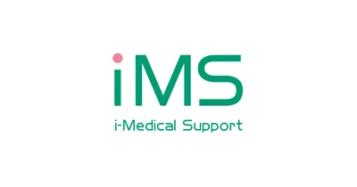 |
アイメディカルサポート株式会社埼玉県 アイメディカルサポート株式会社は、2016年設立の埼玉県秩父市に本社（東京都中央区にオフィス）を置く企業です。医療コンサルティング事業を主軸に、… |
FA・仲介両方※事業承継支援系 | 6名 | 非公開 | 個別協議 | 事業承継 | 2026-08-12 |
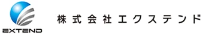 |
株式会社エクステンド東京都 株式会社エクステンドは、東京都中央区に本社を置くM&A支援会社です。2015年12月に株式会社フィナンシャル・インスティチュートのMBOにより設… |
FA・仲介両方※その他M&A支援会社 | 6名 | 非公開 | 非公開 | 事業承継 | 2026-08-12 |
| 税理士法人SKJ静岡県 税理士法人SKJは静岡県磐田市に拠点を置く税理士法人です。公式サイトでは相続・贈与のご相談や創業期・世代交代期の支援など、中小企業や個人向けの経… |
FA・仲介両方※税理士法人系 | 6名 | 非公開 | 非公開 | 事業承継 | 2026-08-12 | |
| 株式会社ＳＢＳ企画東京都 株式会社ＳＢＳ企画は、東京都中央区銀座に本社を置く食品・流通業界特化のコンサルティング会社です。公式サイトでは、商品開発企画や販売先の紹介・開拓… |
仲介のみ※その他M&A支援会社 | 6名 | 非公開 | 非公開 | 事業承継 | 2026-08-12 | |
| エニータイムヘルスケアコンサルティング株式会社大阪府 エニータイムヘルスケアコンサルティング株式会社は、大阪市中央区に本社を置き、医療機関（クリニック・診療所）の第三者承継に特化したコンサルティング… |
FA・仲介両方事業承継支援系 | 6名 | 非公開 | 無料 | 事業承継完全成功報酬 | 2026-08-12 | |
| Ｍ＆Ａトータルアドバイザリー株式会社東京都 Ｍ＆Ａトータルアドバイザリー株式会社は、東京都中央区日本橋に本社を置くM&A支援会社です。公式サイトでは、主に中堅・中小企業を対象としたM&Aア… |
FA・仲介両方FAS・アドバイザリー | 6名 | 非公開 | 非公開 | 事業承継 | 2026-08-12 | |
| エムエーウェルフェア株式会社東京都 エムエーウェルフェア株式会社は、東京都千代田区に本社を置く、保育園・保育所・学童保育など福祉・保育業界に特化したM&A支援機関です。公式サイトで… |
FA・仲介両方事業承継支援系 | 6名 | 非公開 | 無料※ | 事業承継完全成功報酬PMI | 2026-08-12 | |
| 株式会社勝島経営研究所ビジネスカツシマ新潟県 株式会社勝島経営研究所ビジネスカツシマは、新潟県上越市に本社を置く経営コンサルティング会社です。1990年7月設立、資本金1000万円、従業員2… |
仲介のみその他M&A支援会社 | 6名 | 2,000万円 | 50万円※ | 事業承継 | 2026-08-12 | |
| 株式会社グローバル・パートナーズ・コンサルティング東京都 株式会社グローバル・パートナーズ・コンサルティング（GPC Japan）は、2000年創業（2008年分社化）の東京・千代田区に本社を置く独立系… |
FAのみFAS・アドバイザリー | 6名 | 非公開 | 非公開 | クロスボーダーPMI | 2026-08-12 | |
| 税理士法人古田土会計東京都 税理士法人古田土会計は、1983年設立の中小企業向け会計・税務顧問サービスを主業とする法人です。東京都江戸川区西葛西に本社を置き、大阪・横浜・仙… |
FAのみ※税理士法人系 | 6名 | 非公開 | 非公開 | 2026-08-12 | ||
| 株式会社古田土経営東京都 株式会社古田土経営は、1983年設立の古田土会計グループの中核会社で、税理士法人古田土会計と同一の本社（東京都江戸川区西葛西）・同一ウェブサイト… |
FAのみ※その他M&A支援会社 | 6名 | 非公開 | 非公開 | 2026-08-12 | ||
| 株式会社コーポレート・アドバイザーズM&A東京都 株式会社コーポレート・アドバイザーズM&Aは、2007年2月設立のM&A仲介・アドバイザリー会社です。東京都千代田区霞が関に本社を置き、公式サイ… |
FA・仲介両方M&A仲介・FA複合 | 6名 | 2,000万円 | 無料 | 事業承継着手金なし | 2026-08-12 | |
| 株式会社サクシード大阪府 株式会社サクシードは2023年6月設立、大阪市北区に本社を置くM&A仲介会社です。公式サイトでは「不動産賃貸業・不動産投資のM&A」を主軸事業と… |
仲介のみ事業承継支援系 | 6名 | 1,000万円 | 無料 | 着手金なし | 2026-08-12 | |
| SAKURA United Solution株式会社埼玉県 SAKURA United Solution株式会社は、埼玉県さいたま市（武蔵浦和）に本部を置く税理士法人・社会保険労務士法人・行政書士法人など… |
FA・仲介両方※税理士法人系 | 6名 | 非公開 | 非公開 | 事業承継 | 2026-08-12 | |
| 株式会社シードアドバイザリー東京都 株式会社シードアドバイザリーは、東京都中央区銀座に本社を置く、建設業界に特化したM&A支援会社です。2023年3月設立で、2023年2月に持株会… |
FA・仲介両方M&A仲介・FA複合 | 6名 | 非公開 | 非公開 | 事業承継PMI | 2026-08-12 | |
| 株式会社シードコンサルティング東京都 株式会社シードコンサルティングは、2018年4月設立、東京都港区に本社を置く建設業界特化型の財務・事業承継・M&A支援会社です。公式サイトでは、… |
FA・仲介両方※コンサルティング会社系 | 6名 | 非公開 | 非公開 | 事業承継 | 2026-08-12 | |
| ジェービィックホールディングス株式会社東京都 ジェービィックホールディングス株式会社は、東京都千代田区神田神保町に本社を置くM&A支援会社です。平成12年（2000年）8月に設立され、公式サ… |
FA・仲介両方その他M&A支援会社 | 6名 | 非公開 | 非公開 | 2026-08-12 | ||
| 事業承継コンサルティング株式会社東京都 事業承継コンサルティング株式会社は、東京都中央区に拠点を置くコンサルティング会社で、大企業の販売店・代理店ネットワークを対象とした事業承継・M&… |
FAのみ事業承継支援系 | 6名 | 非公開 | 非公開 | 事業承継PMI | 2026-08-12 | |
| スクエアワン株式会社東京都 スクエアワン株式会社は、東京都渋谷区に本社を置く「スクエアワングループ」の中核企業です。グループは2001年開業の司法書士事務所を起点に、司法書… |
FA・仲介両方※その他M&A支援会社 | 6名 | 非公開 | 非公開 | 事業承継PMI | 2026-08-12 | |
| 株式会社ティグレ大阪府 株式会社ティグレは、税理士・社会保険労務士・行政書士など各分野の専門家が集まる「ティグレグループ」（創立50年以上、代表・上田良子）を構成する事… |
FAのみその他M&A支援会社 | 6名 | 55万円 | 33万円※ | 事業承継 | 2026-08-12 | |
| 株式会社ＴＫＣ栃木県 株式会社ＴＫＣは、栃木県宇都宮市に本社を置く東証プライム上場（証券コード9746）の情報サービス企業です。1966年創業で、会計事務所向けの会計… |
FA・仲介両方コンサルティング会社系 | 6名 | 500万円 | 無料※ | 事業承継完全成功報酬 | 2026-08-12 | |
| 株式会社日本経営大阪府 株式会社日本経営は、大阪府豊中市に本社を置く経営コンサルティング会社で、1967年創業・1999年設立の日本経営グループの中核企業です。公式サイ… |
FA・仲介両方コンサルティング会社系 | 6名 | 2,000万円 | 非公開 | 事業承継クロスボーダーPMI | 2026-08-12 | |
| ビバルコ・ジャパン株式会社東京都 ビバルコ・ジャパン株式会社は、東京都千代田区飯田橋に本社を置く独立系の財務アドバイザリーファームです。公式サイトでは、ビジネス評価（非上場株式・… |
FA・仲介両方その他M&A支援会社 | 6名 | 非公開 | 非公開 | 事業承継クロスボーダー | 2026-08-12 | |
| フィンポート・アドバイザリー合同会社東京都 フィンポート・アドバイザリー合同会社は、公認会計士・税理士の松本光博氏が代表を務める「フィンポート会計グループ」の一員として、東京都千代田区に本… |
FA・仲介両方FAS・アドバイザリー | 6名 | 非公開 | 非公開 | 事業承継PMI | 2026-08-12 | |
| 株式会社福井キャピタル＆コンサルティング福井県 株式会社福井キャピタル＆コンサルティングは、福井銀行本店ビル内に本店を置く福井銀行グループのコンサルティング会社です。公式サイトでは、福井県内で… |
FA・仲介両方金融グループ系M&A専業会社 | 6名 | 非公開 | 非公開 | 事業承継 | 2026-08-12 | |
| 株式会社マイツ京都府 株式会社マイツは、京都に本社を置く会計事務所系の専門家グループで、1987年設立、1994年から中国に進出しています。会計・税務や人事労務、経営… |
FA・仲介両方※その他M&A支援会社 | 6名 | 1,000万円 | 非公開 | 事業承継クロスボーダー | 2026-08-12 | |
| 株式会社ミライア東京都 株式会社ミライアは2025年7月設立のM&A仲介会社です。公式サイトでは、事業承継ではなくIT・Web・人材・広告領域を中心とした「成長戦略型M… |
仲介のみ独立系M&A仲介 | 6名 | 設定なし | 無料 | 完全成功報酬 | 2026-08-12 | |
| 株式会社メディカル・アセッツ大阪府 株式会社メディカル・アセッツは、大阪市中央区に本店を置くM&A支援機関で、税理士法人辻総合会計グループの一員として同グループの公式サイト上でサー… |
FA・仲介両方※税理士法人系 | 6名 | 非公開 | 非公開 | 事業承継 | 2026-08-12 | |
| 株式会社メディカル・アドバイザーズ東京都 株式会社メディカル・アドバイザーズは、東京都千代田区霞が関に本社を置く、医療・介護業界に特化したM&A支援会社です。公式サイトでは、病院・医療法… |
仲介のみ事業承継支援系 | 6名 | 1,000万円 | 無料 | 事業承継完全成功報酬 | 2026-08-12 | |
| R | 株式会社RenDan東京都 株式会社RenDanは東京都杉並区に本社を置き、店舗専門のM&A仲介サービス「お店売れるくん」を運営しています。同社のプレスリリースによると、本… |
仲介のみM&Aプラットフォーム・マッチング | 6名 | 非公開 | 無料 | 事業承継完全成功報酬 | 2026-08-12 |
| 税理士法人奏共同会計事務所東京都 税理士法人奏共同会計事務所は、名古屋市に本店を置く税理士法人で、2016年設立（前身の金田会計事務所は1980年創業）、静岡にも事務所を持ちます… |
FAのみ税理士法人系 | 6名 | 非公開 | 非公開 | 事業承継PE案件クロスボーダー | 2026-08-12 | |
| 遠藤隆浩税理士事務所岐阜県 遠藤隆浩税理士事務所は、岐阜県高山市に拠点を置く税理士・会計事務所です。1967年に先代により創業され、現在は遠藤隆浩税理士が代表を務めています… |
FA・仲介両方※税理士法人系 | 6名 | 非公開 | 非公開 | 事業承継 | 2026-08-12 | |
| 伊東祐生税理士事務所北海道 伊東祐生税理士事務所は、北海道札幌市に拠点を置く「マケットコンサルティンググループ」を構成する税理士事務所です。同グループは2019年11月に設… |
FA・仲介両方※税理士法人系 | 5名 | 非公開 | 非公開 | 事業承継 | 2026-08-12 | |
| 西迫会計事務所神奈川県 西迫会計事務所は、神奈川県厚木市に所在する公認会計士・税理士事務所です。前身は1958年に東京で開業した税理士事務所で、1959年に神奈川県へ拠… |
FA・仲介両方※税理士法人系 | 5名 | 非公開 | 非公開 | 事業承継 | 2026-08-12 | |
| 下﨑寛税理士事務所東京都 下﨑寛税理士事務所は、1985年開業の東京都新宿区の税理士事務所です。代表の下﨑寛氏は税理士・不動産鑑定士・中小企業診断士・行政書士の資格を持ち… |
FA・仲介両方※税理士法人系 | 5名 | 非公開 | 非公開 | 2026-08-12 | ||
| 西税務会計事務所熊本県 西税務会計事務所は、熊本県熊本市に単一拠点を構える税理士事務所です。1985年（昭和60年）に先代所長・西道雄氏が熊本国税局退職後に開業し、現所… |
FA・仲介両方※税理士法人系 | 5名 | 非公開 | 非公開 | 事業承継 | 2026-08-12 | |
| 河野会計事務所（有限会社UBC経営）山口県 河野会計事務所（有限会社UBC経営）は、山口県宇部市に本拠を置く1973年設立の税理士事務所です。公式サイトでは、税務・会計顧問業務を中核としな… |
FA・仲介両方税理士法人系 | 5名 | 非公開 | 非公開 | 2026-08-12 | ||
| 掛 | 掛川会計事務所大阪府 掛川会計事務所は、大阪府堺市堺区（南海高野線堺東駅徒歩約5分）に所在する税理士事務所で、掛川豊弘氏・掛川達也氏の両税理士が代表を務めています。公… |
FA・仲介両方税理士法人系 | 5名 | 非公開 | 非公開 | 2026-08-12 | |
| 野田公認会計士事務所愛知県 野田公認会計士事務所は、愛知県名古屋市に本拠を置く公認会計士事務所です。公式サイトでは1981年設立と記載しており、税務・会計監査業務に加え、経… |
FA・仲介両方※会計士法人系 | 5名 | 非公開 | 非公開 | 事業承継 | 2026-08-12 | |
| 4C'sパートナーズ株式会社東京都 4C'sパートナーズ株式会社は、2023年9月に設立された東京都渋谷区の企業で、M&Aおよび店舗の出店・売却に関する関連業者等とのマッチング支援… |
FA・仲介両方※M&Aプラットフォーム・マッチング | 5名 | 非公開 | 非公開 | 事業承継 | 2026-08-12 | |
| アイザワ証券株式会社東京都 アイザワ証券株式会社は、東京都港区に本社を置く証券会社で、持株会社であるアイザワ証券グループ株式会社（東証プライム上場、証券コード8708）の完… |
FAのみ※証券会社系 | 5名 | 非公開 | 非公開 | 事業承継クロスボーダー | 2026-08-12 | |
| IT WORKS株式会社沖縄県 IT WORKS株式会社は、2022年4月に設立された沖縄県那覇市の企業で、大阪にも支社を持ちます。主力事業はDXコンサルティング、コールセンタ… |
仲介のみその他M&A支援会社 | 5名 | 非公開 | 非公開 | 事業承継 | 2026-08-12 | |
| アイル監査法人広島県 アイル監査法人は、2019年5月に広島市で設立された監査法人です。会社法監査や学校法人・医療法人・社会福祉法人監査などの会計監査業務に加え、株式… |
FA・仲介両方※会計士法人系 | 5名 | 非公開 | 非公開 | 事業承継 | 2026-08-12 | |
| 株式会社青山財産ネットワークス東京都 株式会社青山財産ネットワークスは1991年設立、東証スタンダード上場（証券コード8929）の資産コンサルティング会社です。公式サイトでは公認会計… |
FA・仲介両方※その他M&A支援会社 | 5名 | 非公開 | 非公開 | 事業承継PE案件 | 2026-08-12 | |
| 株式会社アガルートＭ＆Ａ東京都 株式会社アガルートM&Aは、2025年1月に設立された、東京都新宿区に本社を置くM&A支援会社です。オンライン資格予備校等を運営するアガルートグ… |
FA・仲介両方独立系M&A仲介 | 5名 | 1,500万円 | 無料※ | 完全成功報酬 | 2026-08-12 | |
| 税理士法人アクシス愛知県 税理士法人アクシスは、愛知県名古屋市東区に本店を置く税理士法人です。中小企業庁のM&A支援機関登録制度に登録されており、M&A支援業務の専従者数… |
FA・仲介両方税理士法人系 | 5名 | 500万円 | 非公開 | 2026-08-12 | ||
| 浅沼みらい税理士法人栃木県 浅沼みらい税理士法人は、栃木県足利市に本社を置く浅沼経営センターグループの中核法人です。グループは1960年（昭和35年）に浅沼会計事務所として… |
FA・仲介両方税理士法人系 | 5名 | 非公開 | 非公開 | 事業承継 | 2026-08-12 | |
| 朝日税理士法人東京都 朝日税理士法人は、東京都千代田区に本部を置く税理士法人です。公式サイトでは2002年5月設立、代表社員4名体制で、税理士58名・公認会計士25名… |
FA・仲介両方※税理士法人系 | 5名 | 非公開 | 非公開 | 事業承継クロスボーダー | 2026-08-12 | |
| 税理士法人朝日会計社埼玉県 税理士法人朝日会計社は、埼玉県さいたま市浦和区に本店を置く税理士法人です。前身は宮原公認会計士事務所で、法人税・資産税分野を中心とした税務コンサ… |
FA・仲介両方税理士法人系 | 5名 | 非公開 | 非公開 | 事業承継 | 2026-08-12 | |
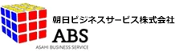 |
朝日ビジネスサービス株式会社東京都 朝日ビジネスサービス株式会社は、東京都世田谷区に本社を置く朝日税理士法人グループのコンサルティング会社です。1987年設立で、資本金5,000万… |
FA・仲介両方※税理士法人系 | 5名 | 非公開 | 非公開 | 事業承継 | 2026-08-12 |
| 株式会社ASPASIO東京都 株式会社ASPASIOは2014年設立の独立系アドバイザリーファームです。公式サイトでは、ファイナンシャル・アドバイザリー（M&A・事業承継・ク… |
FA・仲介両方※独立系FA | 5名 | 非公開 | 非公開 | 事業承継PE案件クロスボーダー+1 | 2026-08-12 | |
| 株式会社アタックス・ビジネス・コンサルティング愛知県 株式会社アタックス・ビジネス・コンサルティングは、名古屋市中村区に本社を置く経営コンサルティング会社です。1981年設立のアタックスグループの一… |
FAのみコンサルティング会社系 | 5名 | 非公開 | 非公開 | 事業承継PE案件PMI | 2026-08-12 | |
| 株式会社アックスコンサルティング東京都 株式会社アックスコンサルティングは、1988年8月創業、東京都渋谷区に本社を置くコンサルティング会社です。東京・大阪・名古屋・福岡に拠点を持ち、… |
仲介のみコンサルティング会社系 | 5名 | 業界最低水準（具体的金額は非公開） | 無料 | 事業承継完全成功報酬 | 2026-08-12 | |
| アポプラスキャリア株式会社東京都 アポプラスキャリア株式会社は、クオールホールディングス株式会社を親会社とし、医療従事者向けの人材紹介・派遣サービスを主軸に展開する企業です。同社… |
FA・仲介両方事業承継支援系 | 5名 | 100万円 | 非公開 | 事業承継 | 2026-08-12 | |
| 株式会社Innovation M&A Partners東京都 株式会社Innovation M&A Partnersは、東証グロース上場の株式会社イノベーション（証券コード：3970）を親会社とするM&Aア… |
FA・仲介両方M&A仲介・FA複合 | 5名 | 非公開 | 無料 | 事業承継完全成功報酬 | 2026-08-12 | |
| 株式会社インフィニティライフ東京都 株式会社インフィニティライフは、2016年設立の東京・西新宿に本社を置くM&A仲介会社です。学習塾（セカチャレ）、不動産業（ReSMA）、人材業… |
仲介のみその他M&A支援会社 | 5名 | 非公開 | 非公開 | 事業承継 | 2026-08-12 | |
| AMCパートナーズ株式会社大阪府 AMCパートナーズ株式会社は、大阪市中央区に本社を置く、医院・クリニック経営に特化したコンサルティング会社です。2005年5月の設立で、税理士事… |
FA・仲介両方事業承継支援系 | 5名 | 100万円 | 非公開 | 事業承継 | 2026-08-12 | |
| 税理士法人エスネットワークス東京都 税理士法人エスネットワークスは、東京都千代田区丸の内に本社を置く税理士法人で、2004年7月20日に設立されました。公式サイトでは税務顧問を中核… |
FA・仲介両方税理士法人系 | 5名 | 500万円 | 非公開 | 事業承継クロスボーダーPMI | 2026-08-12 | |
| M&Aスターキャリア株式会社東京都 M&Aスターキャリア株式会社は、東京都中央区銀座に本社を置くM&A仲介会社で、2022年に設立されました。公式サイトの会社概要では事業内容を「M… |
FA・仲介両方M&A仲介・FA複合 | 5名 | 非公開 | 無料 | 事業承継完全成功報酬 | 2026-08-12 | |
| 株式会社Ｍ＆Ａ Ｄｏ東京都 株式会社Ｍ＆Ａ Ｄｏは2021年4月設立、東京都港区北青山に本社を置くM&A仲介・アドバイザリー会社です。教育業界特化型のM&A支援サービス「教… |
FA・仲介両方M&A仲介・FA複合 | 5名 | 非公開 | 無料 | 事業承継着手金なしPMI | 2026-08-12 | |
| 税理士法人エム・エイ・シー京都京都府 税理士法人エム・エイ・シー京都は、1979年に開業し2004年に法人化した会計事務所で、京都市中京区を本拠に綾部市・丹波市の3拠点を展開していま… |
FAのみ税理士法人系 | 5名 | 非公開 | 非公開 | 2026-08-12 | ||
| 株式会社ＭＨＣアドバイザリーサービス京都府 株式会社ＭＨＣアドバイザリーサービスは、京都市中京区に本社を置くMHC税理士法人グループの一員です。公式サイトによれば、税務・会計業務を担うMH… |
FA・仲介両方※税理士法人系 | 5名 | 非公開 | 非公開 | 事業承継PMI | 2026-08-12 | |
| 弁護士法人A&P大阪府 弁護士法人A&P（瀧井総合法律事務所）は、大阪市中央区に拠点を置く法律事務所です。代表弁護士の瀧井喜博氏をはじめ、公式サイトには6名の弁護士が紹… |
FAのみ法律事務所系 | 5名 | 非公開 | 非公開 | 事業承継 | 2026-08-12 | |
| Ａ | 株式会社ＡＢＣコンサルティング会計事務所東京都 株式会社ＡＢＣコンサルティング会計事務所は、東京都新宿区に所在する税理士法人系の会計事務所で、医療法人専門の税理士法人出身の税理士らにより設立さ… |
FA・仲介両方※税理士法人系 | 5名 | 非公開 | 非公開 | 事業承継 | 2026-08-12 |
| 株式会社大阪真和ビジコン大阪府 株式会社大阪真和ビジコンは、大阪市北区に拠点を置く税理士 掛川会計事務所と一体で運営される会計・コンサルティング会社です。1984年設立で、代表… |
FA・仲介両方※税理士法人系 | 5名 | 非公開 | 非公開 | 事業承継 | 2026-08-12 | |
| ORYZA CONSULTING株式会社広島県 ORYZA CONSULTING株式会社は、広島市に本社を置くコンサルティング会社です。2018年10月設立、代表取締役CEOの三宅史記氏は公認… |
FAのみコンサルティング会社系 | 5名 | 非公開 | 非公開 | 事業承継 | 2026-08-12 | |
| かがやきM&A株式会社東京都 かがやきM&A株式会社は、東京・名古屋・大阪にオフィスを構え、中小企業の事業承継を中心にM&A支援を行う会社です。公式サイトでは、M&A支援（仲… |
FA・仲介両方M&A仲介・FA複合 | 5名 | 非公開 | 非公開 | 事業承継 | 2026-08-12 | |
| キ | 株式会社キャピタルプライム東京都 株式会社キャピタルプライムは、2024年に設立された東京都渋谷区の中小企業向けM&A支援会社です。公式サイトでは、売り手・買い手双方に対して中立… |
FA・仲介両方FAS・アドバイザリー | 5名 | 2,500万円 | 無料 | 事業承継完全成功報酬PMI | 2026-08-12 |
| きらやかコンサルティング＆パートナーズ株式会社山形県 きらやかコンサルティング＆パートナーズ株式会社は、山形県山形市に本社を置くコンサルティング会社です。本社所在地はきらやか銀行本社ビル内にあり、公… |
FA・仲介両方※金融グループ系M&A専業会社 | 5名 | 非公開 | 非公開 | 事業承継 | 2026-08-12 | |
| 近 | 株式会社近代経営熊本県 株式会社近代経営は熊本県熊本市を拠点とする経営コンサルティング会社です。公式サイトでは、決算書に基づく将来予測「あんしん未来診断」や、経営計画策… |
FA・仲介両方※その他M&A支援会社 | 5名 | 非公開 | 非公開 | 事業承継 | 2026-08-12 |
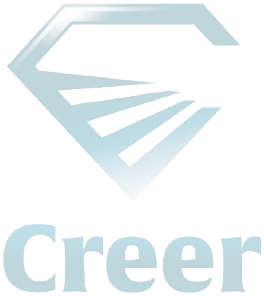 |
株式会社Creer東京都 株式会社Creerは2023年6月設立、東京都渋谷区に本社を置くM&A支援会社です。公式サイトでは「繋がる未来を創造する」を企業理念に掲げ、資本… |
FA・仲介両方※その他M&A支援会社 | 5名 | 非公開 | 非公開 | 2026-08-12 | |
| GL | グローバルゲート株式会社東京都 グローバルゲート株式会社は、公式サイトのタイトルで「海外M&A・事業承継の専門コンサルティング」を掲げるM&Aファームです。代表の加藤修氏はメガ… |
FA・仲介両方独立系FA | 5名 | 1,500万円 | 非公開 | 事業承継クロスボーダー | 2026-08-12 |
| 協同組合さいたま総合研究所埼玉県 協同組合さいたま総合研究所は、埼玉県さいたま市に拠点を置く協同組合形態の経営コンサルティング組織です。中小企業診断士・税理士・公認会計士など約7… |
FA・仲介両方※事業承継支援系 | 5名 | 非公開 | 非公開 | 事業承継クロスボーダーPMI | 2026-08-12 | |
| シェルパ税理士法人東京都 シェルパ税理士法人は、1985年に檜田公認会計士事務所として開業し、2016年の法人化を経て2022年9月に現在の名称となった、東京・新宿と秋葉… |
FA・仲介両方※税理士法人系 | 5名 | 非公開 | 非公開 | 事業承継クロスボーダー | 2026-08-12 | |
| シフトビジネスコンサルティング株式会社福岡県 シフトビジネスコンサルティング株式会社は、福岡市博多区に本社を置くコンサルティング会社です。公式サイトでは、経営改善・成長戦略支援、M&Aアドバ… |
FA・仲介両方※コンサルティング会社系 | 5名 | 非公開 | 非公開 | 事業承継PMI | 2026-08-12 | |
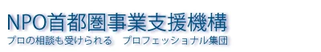 |
特定非営利活動法人首都圏事業支援機構東京都 特定非営利活動法人首都圏事業支援機構は、東京都新宿区に所在するNPO法人で、中小企業庁の中小企業経営力強化支援法に基づく経営革新等支援機関として… |
FA・仲介両方その他M&A支援会社 | 5名 | 300万円 | 非公開 | 2026-08-12 | |
| 一般社団法人しんきん支援ネットワーク北海道 一般社団法人しんきん支援ネットワークは、北海道の6信用金庫（北見信用金庫、帯広信用金庫、北星信用金庫、北空知信用金庫、釧路信用金庫、苫小牧信用金… |
FA・仲介両方※その他M&A支援会社 | 5名 | 非公開 | 非公開 | 事業承継 | 2026-08-12 | |
| 株式会社G.C FACTORY東京都 株式会社G.C FACTORYは2020年4月設立、東京都渋谷区に本社を置く医療機関特化型のM&A仲介会社です。公式サイトでは「良い会社を生み出… |
仲介のみ事業承継支援系 | 5名 | 500万円 | 無料 | 事業承継完全成功報酬 | 2026-08-12 | |
| 株式会社Stand by C東京都 株式会社Stand by Cは、2010年設立の公認会計士・税理士を中心とした東京・大阪拠点の専門家集団です。公式サイトでは、株価算定（バリュエ… |
FAのみFAS・アドバイザリー | 5名 | 非公開 | 非公開 | 事業承継PE案件PMI | 2026-08-12 | |
| 株式会社スターシップホールディングス東京都 株式会社スターシップホールディングスは、税理士事務所を母体とするコンサルティングファームで、公式サイトでは「アヴァンギャルド・スターシップグルー… |
FA・仲介両方税理士法人系 | 5名 | 1,000万円 | 非公開 | 事業承継PE案件 | 2026-08-12 | |
| 税理士法人ＳＷＡＴＳ兵庫県 税理士法人ＳＷＡＴＳ（旧・税理士法人神戸合同会計事務所）は、1990年に神戸で開業した税務・会計事務所を母体とし、2025年に東京オフィスを開設… |
FA・仲介両方※税理士法人系 | 5名 | 非公開 | 非公開 | 事業承継 | 2026-08-12 | |
| Sevenseas＆Co株式会社東京都 Sevenseas＆Co株式会社は、東京都港区虎ノ門に所在するM&A支援会社です。ウェルス・マネジメントや投資事業、各種アドバイザリーを手掛ける… |
FA・仲介両方その他M&A支援会社 | 5名 | 2,000万円 | 非公開 | 2026-08-12 | ||
| 税理士法人宇野会計愛知県 税理士法人宇野会計は、愛知県名古屋市緑区に拠点を置く税理士法人です。昭和44年（1969年）の会計事務所創業以来、月次巡回監査を重視した顧問業務… |
FA・仲介両方税理士法人系 | 5名 | 非公開 | 非公開 | 事業承継 | 2026-08-12 | |
| 税理士法人第一経理東京都 税理士法人第一経理は、東京都豊島区に本社を置く第一経理グループの中核法人です。1954年設立の株式会社第一経理を母体に、税理士法人のほか司法書士… |
FA・仲介両方※税理士法人系 | 5名 | 非公開 | 非公開 | 事業承継PE案件 | 2026-08-12 | |
| 株式会社ソリューションパートナーズ東京都 株式会社ソリューションパートナーズは、東京都千代田区神田錦町に本社を置く2000年4月設立のM&Aコンサルティング会社です。公式サイトのトップペ… |
FA・仲介両方独立系M&A仲介 | 5名 | 2,000万円 | 非公開 | 事業承継クロスボーダー | 2026-08-12 | |
| 智創税理士法人大阪府 智創税理士法人は、全国の個人税理士事務所が連携して2015年6月に設立された税理士法人で、大阪中央事務所（本店）のほか広島・神戸・群馬・盛岡に拠… |
FA・仲介両方※税理士法人系 | 5名 | 非公開 | 非公開 | 事業承継 | 2026-08-12 | |
| TSAコンサルティング株式会社大阪府 TSAコンサルティング株式会社は、大阪市中央区に本社を置くM&Aアドバイザリー会社です。2013年12月の設立で、税理士法人や公認会計士事務所を… |
FAのみコンサルティング会社系 | 5名 | 1,000万円 | 非公開 | PE案件PMI | 2026-08-12 | |
| 株式会社D&Mカンパニー大阪府 株式会社D&Mカンパニーは、2015年11月設立で大阪市北区梅田に本社（東京都千代田区霞が関にも拠点）を置く、東京証券取引所グロース市場上場企業… |
FA・仲介両方※事業承継支援系 | 5名 | 非公開 | 非公開 | 事業承継 | 2026-08-12 | |
| 株式会社ディープインパクト東京都 株式会社ディープインパクトは、東京都千代田区麹町に所在する会計・税務・財務の専門家集団で、税理士法人ディープインパクトと一体で運営されています。… |
FAのみ税理士法人系 | 5名 | 非公開 | 非公開 | PMI | 2026-08-12 | |
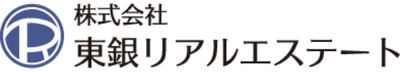 |
株式会社東銀リアルエステート東京都 株式会社東銀リアルエステートは東京都中央区銀座に本社を置く不動産会社で、不動産売買事業・企画開発事業・M&A事業・コンサルティング/売買仲介事業… |
仲介のみその他M&A支援会社 | 5名 | 非公開 | 非公開 | 事業承継 | 2026-08-12 |
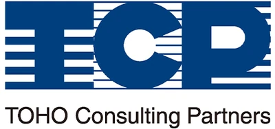 |
株式会社東邦コンサルティングパートナーズ福島県 株式会社東邦コンサルティングパートナーズは東邦銀行グループの一員として2022年10月に営業を開始した、福島県福島市を拠点とするM&A・事業承継… |
FA・仲介両方金融グループ系M&A専業会社 | 5名 | 非公開 | 非公開 | 事業承継 | 2026-08-12 |
| ＴＯＭＡコンサルタンツグループ株式会社東京都 ＴＯＭＡコンサルタンツグループ株式会社は、東京都千代田区丸の内に本社を置く総合コンサルティンググループです。公式サイトによれば1982年12月設… |
FA・仲介両方※コンサルティング会社系 | 5名 | 非公開 | 非公開 | 事業承継 | 2026-08-12 | |
| Trilato Plus株式会社東京都 Trilato Plus株式会社は、2020年3月に設立された東京都千代田区九段北の会計・コンサルティング会社です。代表取締役の武田泰典氏をはじ… |
FA・仲介両方M&A仲介・FA複合 | 5名 | 最低手数料なし（中小企業庁M&A支援機関登録DB記載） | 非公開 | 事業承継 | 2026-08-12 | |
| バ | 株式会社バニラスカイ和歌山県 株式会社バニラスカイは、和歌山県和歌山市を拠点とする美容室運営会社です。代表の金山龍大氏は美容師として20年以上のキャリアを持ち、中小企業診断士… |
FA・仲介両方その他M&A支援会社 | 5名 | 100万円 | なし | 事業承継完全成功報酬 | 2026-08-12 |
| 株式会社Penseur大阪府 株式会社Penseurは2008年設立、大阪市中央区に本社、東京都品川区に支店を置く広告・クリエイティブ企業です。グラフィックデザインやウェブ制… |
FA・仲介両方※M&Aプラットフォーム・マッチング | 5名 | 非公開 | 非公開 | 事業承継 | 2026-08-12 | |
| 株式会社 ヒロセビジネスサービス京都府 株式会社ヒロセビジネスサービスは、京都市中京区に本社を置く税理士法人広瀬グループの一員です。公式サイトによれば、税理士法人広瀬・社会保険労務士法… |
FA・仲介両方※税理士法人系 | 5名 | 非公開 | 非公開 | 事業承継 | 2026-08-12 | |
| ビサイドネクサス株式会社大阪府 ビサイドネクサス株式会社は、大阪市北区に本社を置く経営コンサルティングファームです。公式サイトでは、中小企業診断士を中核に公認会計士・弁護士・社… |
FA・仲介両方その他M&A支援会社 | 5名 | 200万円 | 非公開 | 事業承継PMI | 2026-08-12 | |
| 株式会社ファーストパートナーズ・キャピタル東京都 株式会社ファーストパートナーズ・キャピタルは2021年6月設立、東京都港区赤坂に本社を置くM&A・資産コンサルティング会社です。代表取締役の加藤… |
FA・仲介両方FAS・アドバイザリー | 5名 | 非公開 | 非公開 | 事業承継 | 2026-08-12 | |
| フィデューシャリーアドバイザーズ株式会社東京都 フィデューシャリーアドバイザーズ株式会社は、東京都中央区銀座に拠点を置く独立系のM&Aアドバイザリーファームです。公式サイトでは「金融機関や仲介… |
FAのみ独立系FA | 5名 | 非公開 | 非公開 | 事業承継PE案件クロスボーダー+1 | 2026-08-12 | |
| フロンティアパートナーFAS株式会社北海道 フロンティアパートナーFAS株式会社は、北海道帯広市に本拠を置く税理士法人FPCを中核とする「フロンティアパートナーグループ」のM&A専門会社で… |
FA・仲介両方FAS・アドバイザリー | 5名 | 500万円 | 非公開 | 事業承継PMI | 2026-08-12 | |
| 税理士法人ブラザシップ愛知県 税理士法人ブラザシップは、愛知県小牧市に本拠を置き、名古屋・東京にも拠点を持つ税理士法人です。税務顧問や経営支援、創業支援など幅広い財務コンサル… |
FA・仲介両方※税理士法人系 | 5名 | 非公開 | 無料 | 完全成功報酬 | 2026-08-12 | |
| 株式会社Bricks＆UK愛知県 株式会社Bricks＆UKは、名古屋を拠点に東京・四日市・那覇・バンコクへ展開する税理士法人Bricks&UKを母体とするグループ会社で、M&A… |
FA・仲介両方※税理士法人系 | 5名 | 非公開 | 無料 | 事業承継着手金なし | 2026-08-12 | |
| 株式会社ブリッジワン東京都 株式会社ブリッジワンは、東京都渋谷区恵比寿を拠点とする総合人材サービス・コンサルティング会社です。人材紹介・派遣を軸に、高度外国人材紹介、フリー… |
FA・仲介両方その他M&A支援会社 | 5名 | 非公開 | 無料 | 事業承継完全成功報酬PMI | 2026-08-12 | |
| 本郷メディカルソリューションズ株式会社東京都 本郷メディカルソリューションズ株式会社は、国内最大級の税理士法人グループである辻・本郷税理士法人グループに属し、医療機関を専門とするコンサルティ… |
FA・仲介両方※事業承継支援系 | 5名 | 非公開 | 無料 | 事業承継完全成功報酬 | 2026-08-12 | |
| マケットコンサルティング株式会社北海道 マケットコンサルティング株式会社は、北海道札幌市に本社を置く2019年11月設立のコンサルティング企業です。伊東祐生税理士事務所・伊東祐生行政書… |
FA・仲介両方コンサルティング会社系 | 5名 | 非公開 | 非公開 | 事業承継PMI | 2026-08-12 | |
| 株式会社松岡会計コンサルティング大阪府 株式会社松岡会計コンサルティングは、大阪府八尾市を本店とする税理士法人松岡会計事務所の関係会社です。中小企業庁のM&A支援機関登録データベースに… |
FA・仲介両方コンサルティング会社系 | 5名 | 非公開 | 非公開 | 事業承継 | 2026-08-12 | |
| みらいコンサルティング株式会社東京都 みらいコンサルティング株式会社は、1987年設立のみらいコンサルティンググループの中核会社で、東京・京橋に本社を置く総合コンサルティング会社です… |
FA・仲介両方コンサルティング会社系 | 5名 | 非公開 | 非公開 | 事業承継クロスボーダー | 2026-08-12 | |
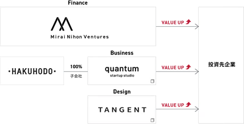 |
株式会社Mirai Nihon Ventures東京都 株式会社Mirai Nihon Venturesは、東京都港区に本社を置く投資会社です。「未来を日本から生み出す」を理念に掲げ、自己資金・傘下フ… |
FA・仲介両方その他M&A支援会社 | 5名 | 非公開 | 非公開 | 事業承継PE案件 | 2026-08-12 |
| 明治通り税理士法人東京都 明治通り税理士法人は、東京都渋谷区に本社を置き、横浜・札幌にも拠点を持つ税理士法人です。税務顧問・決算申告業務を中核としながら、事業承継やM&A… |
FA・仲介両方※税理士法人系 | 5名 | 非公開 | 非公開 | 事業承継 | 2026-08-12 | |
| 株式会社メディカルプラス東京都 株式会社メディカルプラスは2016年設立の、医科・歯科クリニックの第三者継承（医院継承）支援を専門とする仲介会社です。公式サイトでは「医院継承・… |
仲介のみ事業承継支援系 | 5名 | 非公開 | 非公開 | 事業承継 | 2026-08-12 | |
| 株式会社物語工房東京都 株式会社物語工房は東京都港区に所在するM&A仲介会社です。公式サイトでは「売主様は完全無料」を掲げ、着手金・中間金・成功報酬いずれも売主から徴収… |
仲介のみ独立系M&A仲介 | 5名 | 3,500万円 | 無料※ | 事業承継完全成功報酬 | 2026-08-12 | |
| M | MOTAS GROUP株式会社東京都 MOTAS GROUP株式会社は、2021年8月に設立された東京都千代田区麹町の独立系M&Aアドバイザリー会社です。公式サイトでは、みずほ銀行・… |
FA・仲介両方M&A仲介・FA複合 | 5名 | 500万円 | 非公開 | 事業承継PE案件クロスボーダー | 2026-08-12 |
| 株式会社野心満々東京都 株式会社野心満々は、東京都中央区日本橋に本社を置く1996年設立の会社です。公式サイトの会社概要では、株式上場コンサルティング、経理業務アウトソ… |
FA・仲介両方※コンサルティング会社系 | 5名 | 非公開 | 非公開 | 2026-08-12 | ||
| 税理士法人ヤマダ会計静岡県 税理士法人ヤマダ会計は、静岡県浜松市に本店を置く税理士法人で、昭和45年（1970年）創業の山田勝一税理士事務所を前身とするヤマダ会計グループの… |
FA・仲介両方※税理士法人系 | 5名 | 非公開 | 非公開 | 事業承継 | 2026-08-12 | |
| ヤマトリース株式会社東京都 ヤマトリース株式会社は、東京都豊島区に本社を置くトラックリース会社です。1977年に極東リース株式会社として設立され、1995年に現社名へ変更し… |
FA・仲介両方※その他M&A支援会社 | 5名 | 非公開 | 非公開 | 事業承継 | 2026-08-12 | |
| UN | 株式会社ユニティブレインパートナーズ愛知県 株式会社ユニティブレインパートナーズ（通称UBP）は、2013年6月設立、愛知県名古屋市に本社を置くコンサルティング会社です。公式サイトでは「知… |
FA・仲介両方コンサルティング会社系 | 5名 | 非公開 | 非公開 | 事業承継PMI | 2026-08-12 |
| 一般社団法人 横浜Ｍ＆Ａエキスパート神奈川県 一般社団法人横浜M&Aエキスパートは、神奈川県横浜市に拠点を置くM&A支援団体です。公式サイトでは、横浜・川崎・横須賀・湘南地区を中心に、企業の… |
FA・仲介両方※M&A仲介・FA複合 | 5名 | 非公開 | 非公開 | 事業承継 | 2026-08-12 | |
| ラッコ株式会社福岡県 ラッコ株式会社は、福岡市中央区に本社を置くWebサービス運営会社で、2015年11月に設立されました。マーケティングリサーチツール「ラッコキーワ… |
仲介のみM&Aプラットフォーム・マッチング | 5名 | 6万円 | 無料（売主） | 完全成功報酬 | 2026-08-12 | |
| 株式会社リアドバンス東京都 株式会社リアドバンスは、東京都中央区に本社を置き「保育専門M&Aセンター」を運営する会社です。公式サイトでは2011年設立、2013年4月から保… |
FA・仲介両方その他M&A支援会社 | 5名 | 400万円 | 無料 | 完全成功報酬PMI | 2026-08-12 | |
| リゾルトパートナーズ株式会社東京都 リゾルトパートナーズ株式会社は、東京都中央区銀座に本社を置くM&Aアドバイザリー・投資会社です。公式サイトでは「投資事業、コンサルティング・アド… |
FA・仲介両方FAS・アドバイザリー | 5名 | 2,000万円 | 非公開 | 事業承継PE案件PMI | 2026-08-12 | |
| リーテイルブランディング株式会社東京都 リーテイルブランディング株式会社は、東京都港区に本社を置く、小売・外食業界に特化したM&A支援機関です。2000年8月に伊藤忠商事の戦略的事業会… |
FA・仲介両方その他M&A支援会社 | 5名 | 2,000万円 | 非公開 | 事業承継 | 2026-08-12 | |
| 株式会社コレット東京都 株式会社コレットは2018年4月設立、東京都新宿区に本社を置く（大阪オフィスも運営）M&A仲介会社です。公式サイトでは「中堅・中小企業を対象とし… |
FA・仲介両方独立系M&A仲介 | 5名 | 1,000万円 | 無料 | 事業承継完全成功報酬 | 2026-08-12 |
関連する業界研究・学習コンテンツ
業界を知る、から、M&A実務を学ぶへ。
バリュエーション・財務モデリング・M&A実務を、日本語で手を動かして学べる実務Excel教材をそろえています。